4.1. Diagrama de red del proyecto (PDM, ADM, entre otros)
Los diagramas son representaciones gráficas que persiguen la optimización de las actividades a realizar dentro de un proyecto así como facilitar la labor de su posterior seguimiento y control. Los diagramas de red se basan en la construcción de redes gráficas representadas por arcos y nodos.
Este tipo de grafos es considerado dentro de la matemática en una parte denominada teoría de redes o grafos. La teoría de redes o grafos, incluye un modo de representar mediante un modelo gráfico y un problema matemático a resolver.
Por su relación física con el proceso real resulta el modo más simple e intuitivo de representar procesos, y con una resolución más sencilla que el modelo matemático.
Nodo: A cada vértice de un grafo se le denomina nodo.
Arco: son las líneas que unen los nodos.
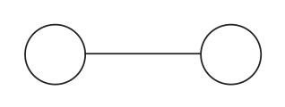
Red: A un conjunto determinado de nodos y arcos se le denomina red.
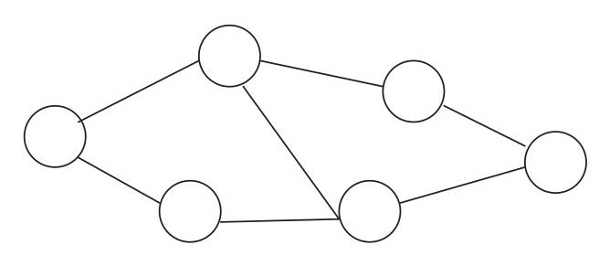
A partir de estas redes se desarrollan otros conceptos como: camino, corte, árbol, etc.
Típicamente, el problema a resolver suele ser el de camino mínimo, árbol mínimo, o el de flujo máximo por la red. En el caso de la programación de proyectos suele ser el problema de camino mínimo.
Con esta metodología suelen resolverse problemas del tipo: programación de proyectos, gestión de inventarios, diseño de rutas, secuenciación y temporización, etc.
Otras denominaciones de los mismos conceptos son:
Vértice=Nodo
Enlace, conexión o arco: conexión entre dos nodos.
Definición
Adyacencia: Dos vértices son adyacentes si entre ellos hay un arco directo que los une.
Camino: es el conjunto de arcos que hay que recorrer para unir un vértice origen con otro vértice destino.
Grafo con pesos: Aquel cuyos enlaces tienen asociado un valor.
Red de un grafo
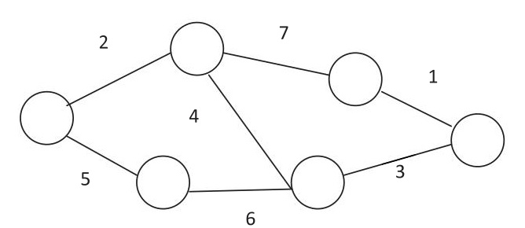
Longitud del camino: es el número de arcos que hay que unir para realizar un camino, y si el grafo es ponderado, la suma de los pesos de cada arco.
Tanto a los arcos como a los nodos se les puede agregar una información, a esta información se le denomina etiqueta
Grafo dirigido: aquel cuyos enlaces son unidireccionales e indican hacia donde están dirigidos. (Flechas)
Red de un grafo dirigido
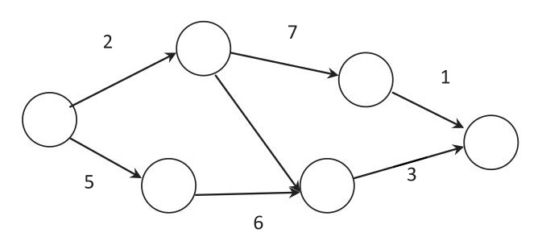
En un grafo dirigido, todos sus enlaces son dirigidos, de modo que si existiera uno no dirigido podría ser sustituido por dos arcos, cada uno en una dirección.
Grafo dirigidotransformación enlace a flecha
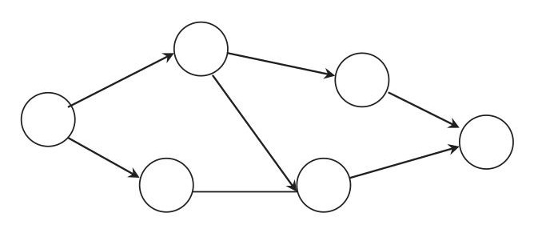
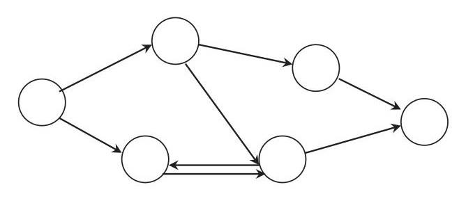
Existen múltiples maneras de representar una red:
Mediante conjuntos
Mediante matriz de incidencia
Mediante representación gráfica
De todos modos dados el carácter representativo de este tipo de problemas acostumbramos a verlos en representación gráfica. No obstante los programas de software informático trabajarán internamente con matrices de incidencia, aunque después la representación gráfica sea el método de visualización. En cualquier caso mostraremos un ejemplo de los tres tipos de representación para un mismo grafo:
1 Mediante conjuntos.
Vienen representados por los conjuntos de los nodos numerados y el conjunto de los arcos que los unen.
Ejemplo: Representación de red mediante conjuntos
V = {1, 2, 3, 4, 5, 6}
A = { {1,2}, {1,5}, {2,3}, {2,5}, {3,4}, {4,5}, {4,6} }
Red grafo asociada
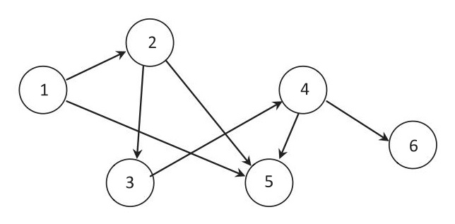
Vemos que el conjunto de nodos es de 1 a 6 (representado el número de nodo como etiqueta), y que los enlaces son representados por el conjunto de los enlaces existentes entre el nodo origen y el nodo destino. Si todos los nodos tuviesen su complementario origen y destino, lo red podría ser representada como un grafo no dirigido, al existir todos los arcos como idas y retornos. En este caso se ha representado como grafo dirigido.
Definición
Matriz de incidencia: Es una matriz cuadrada asociada a la red gráfica y cuyas posiciones leídas de fila a columna valdrán un 1 si existe enlace entre la fila/ columna y un cero en caso de no existir.
Matriz de incidencia
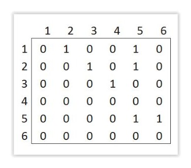
El objetivo de estas redes es la búsqueda y asignación del camino crítico y establecer las holguras de las actividades conceptos que veremos a continuación. También, permitir un correcto seguimiento y control de la ejecución del proyecto.
PDM (Precedence Diagram Method)
Es una técnica de red de proyecto basado en las precedencias de las actividades. En los sistemas basados en PDM, las relaciones entre las distintas actividades están representadas por los arcos, y las actividades se encuentran en tablas (semejantes a los nodos, pero representados habitualmente en nodos cuadrados o tablas) pero teniendo la misma descripción que los nodos.
Los sistemas basados en este tipo de técnicas existen desde hace mucho tiempo. El más conocido de ellos es el problema ROY que veremos posteriormente.
Representación en técnica PDM
Por este sistema cada actividad necesaria para la realización del proyecto se representa por un nodo dentro de una tabla.
Actividad
Las actividades de un proyecto, tendrán relación con el resto de actividades mediantes una serie de restricciones de precedencia. La precedencia es la necesidad de un hito de otra actividad haya ocurrido antes de poder comenzar esa actividad. Supongamos que una actividad A2, no puede darse hasta que haya finalizado una actividad A1. En ese caso el final de la actividad A1 es el hito que tiene que darse para que A2 pueda comenzar, y por tanto la actividad A1, será predecesora de la actividad A2.
Relación de predecesora entre A1 y A2
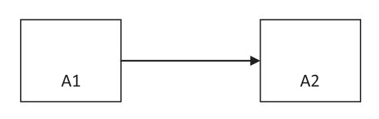
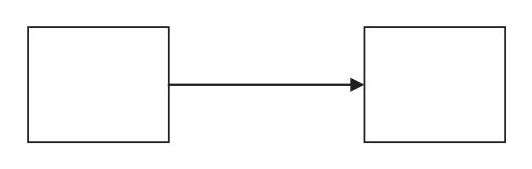
Como veremos a continuación a este tipo de relación se la conoce como una relación de tipo Terminación a inicio.
La duración de una actividad suele representarse entre paréntesis junto a la etiqueta de la actividad. Imaginemos que la actividad A1 tiene una duración de 2 semanas y la A2 de 3 semanas. Su representación sería:
Relación de predecesora entre A1 y A2 y duración:
En el problema de ROY se añaden además cuatro datos dentro de cada tabla de actividad.
IC: Significa inicio más corto y será el valor del inicio más corto desde la fecha actual o la de inicio de proyecto en que puede empezar la actividad.
TC: Significará terminación más corta en que puede darse la terminación de un proyecto y será la suma de IC y la duración de la actividad.
Terminación más corta
TC=IC+d
IL: Se define como el tiempo de inicio más largo de una actividad sin afectar a la duración total del proyecto. Su cálculo se verá más adelante.
TL: Se define como el tiempo de terminación más largo de la actividad dentro de la planificación total del proyecto. Será la suma de IL y la duración de la actividad.
Terminación más larga
TL=IL+d
El esquema de una tabla de ROY con estos datos quedará del siguiente modo:
TC
IC
IL
TL
Los arcos, representarán las relaciones entre las distintas actividades. En este tipo de técnicas (PDM), existen cuatro tipos de relaciones diferentes:
Relación de Inicio a inicio
Se dará cuando una actividad puede iniciar su actividad cuando la actividad con la que tienen relación haya comenzado. Se representará como una flecha que une el inicio de la actividad A1 con el inicio de la actividad A2.
Relación de predecesora entre A1 y A2 con relación inicio a inicio
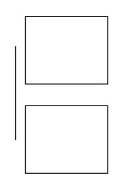
Relación de inicio a terminación
Este tipo de relación se dará cuando la actividad A2 no pueda finalizar hasta que se haya iniciado la actividad predecesora. Su representación será:
Relación de predecesora entre A1 y A2 con relación inicio a Terminación
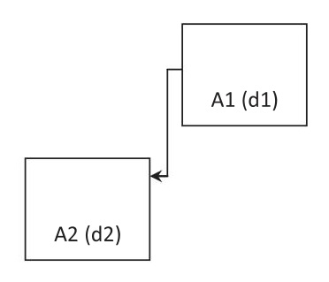
Relación de Terminación a Terminación
Este tipo de relación se dará cuando la actividad A2 no pueda finalizar hasta que se haya finalizado la actividad predecesora. Su representación será:
Relación de predecesora entre A1 y A2 con relación Terminación a Terminación
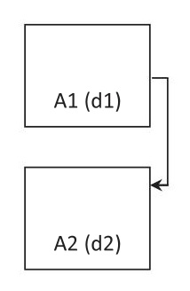
Terminación a inicio
Y por último tendremos la más común en los casos de fases de actividades relación de Terminación a Inicio. En este caso la actividad A2 no podrá comenzar hasta que haya finalizado la actividad A1.
Relación de predecesora entre A1 y A2 con relación de Terminación a Inicio:
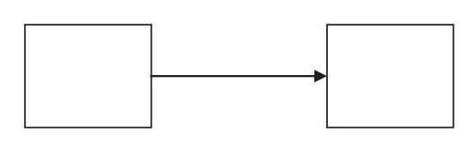
Veamos ahora un ejemplo de resolución de problema a partir del método ROY. Supongamos que tenemos un proyecto con las siguientes características:
A1= Actividad de replanteo con duración de 1 jornada
A2= Canalización de líneas y colocación de cajas y tapado de rozas, con duración de 5 jornadas
A3= Tendido de conductores eléctricos con duración de 3 jornadas.
A4= Pintura con duración de 2 jornadas.
A5= Conexionado y pruebas con duración de 2 jornadas.
Por sus características supondremos las siguientes relaciones de precedencia:
A1= Sin precedencias
A2= A1 (de Terminación a inicio)
A3=A2 (de Terminación a inicio)
A4= A2 (de terminación a inicio)
A5= A3 (de Terminación a inicio)
Hemos supuesto que las actividades de pintura, tendido y conexionado pueden ocurrir a la vez, pues la ejecutan recursos de trabajo distintos (oficiales eléctricas y oficiales de pintura).y suponemos que pueden coordinarse en cuanto a zonas en que cada uno trabaja en un momento dado.
En dichas condiciones la representación del problema anterior nos quedaría:
Planning de obra en sistema ROY
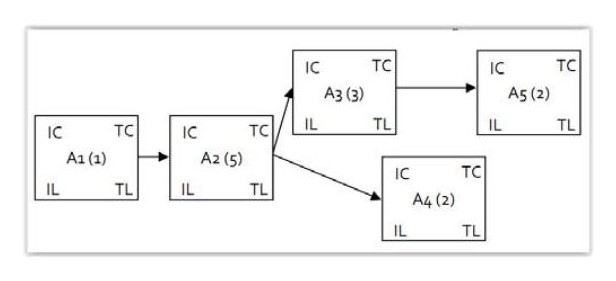
La resolución del problema de planificación requerirá los siguientes pasos:
Comenzaremos indicando para aquella actividad que no tiene antecesora, en nuestro caso la actividad A1 el valor de inicio más corto = 0. Si la actividad está programada para dentro de unas jornadas también podemos comenzar con este valor, pero lo normal será comenzar con el valor 0, lo cual querría decir que el replanteo puede empezar y realizarse hoy mismo.
A continuación calculamos la TC de la actividad A1, calculada como:
Terminación más corta
TC=IC+d
Con esto tendremos:
Planning de obra en sistema ROY (comienzo)
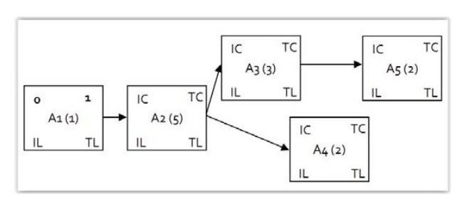
En la siguiente iteración seguiremos la relación representada de fin a comienzo con la actividad A2, estableciendo:
Relación Terminación a Inicio
TC (A1)=IC(A2)
Dado que esta relación de antecesora permitirá como inicio más corto aquél que coincide con la terminación más larga de la actividad anterior. Esto es porque hemos supuesto que hasta que no finalice completamente el replanteo (actividad A1) no puede comenzar nada del trabajo de apertura de rozas, canalizaciones, etc.
Del mismo modo también nos permitirá el cálculo de TC (A2) a través de la misma fórmula anterior.
Siguiendo estos pasos tendremos:
Planning de obra en sistema ROY (iteración 2)
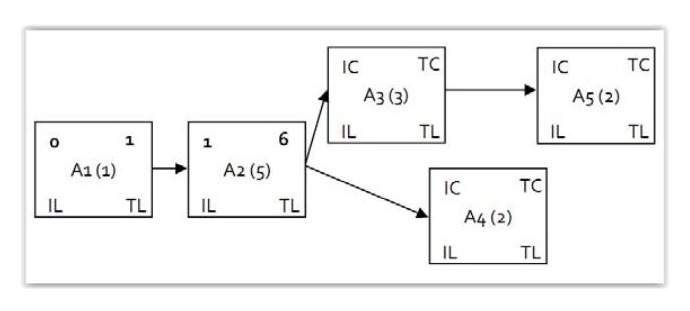
Como podemos observar, la actividad 2 tiene ahora dos actividades sucesoras, por lo que en ambos casos se cumplirá:
Relación Terminación a Inicio
TC (A2)=IC(A3)=IC(A4)
Y por tanto nos quedará:
Planning de obra en sistema ROY (iteración 4)
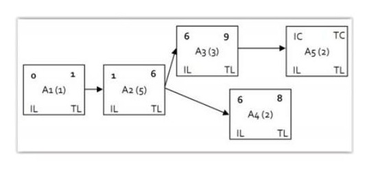
Y para la actividad 5 tendremos:
Planning de obra en sistema ROY (iteración 5)
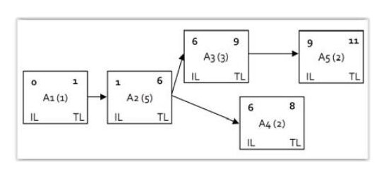
Alcanzado este punto tendremos determinados todos los inicios y finalizaciones más cortos que pueden darse según nuestra planificación. Tanto la actividad A4 como la actividad A5 no poseen actividades secuenciadas posteriores a ellas, de ahí que cuando terminen éstas no existirán actividades de comienzo vinculados a este fin. Observamos que la Terminación más corta de la actividad A5 tiene valor 11, y que la de la actividad A4 tiene valor 8. Por tanto, la terminación más corta posible de todo el proyecto será de 11 jornadas, el mayor de ambos.
Terminación de proyecto
Terminación (Global)=max{TC(actividades sin sucesoras)}
Para todas las actividades sin relaciones sucesoras tras su finalización, en nuestro caso A4 y A5, tomaremos como TL, este mismo valor de terminación Global, el mayor de ellos, y lo indicaremos como TL de los demás, es decir:
Terminación de proyecto
Terminación (Global)=TL {TC(actividades sin sucesoras) }
Con el criterio anterior tendremos:
Planning de obra en sistema ROY (iteración 6)
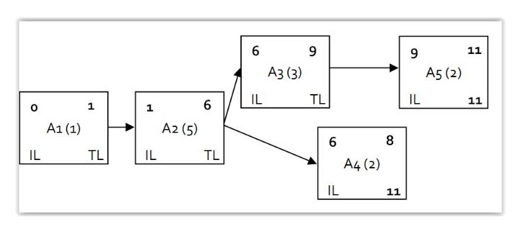
En los siguientes pasos de iteración, realizaremos la operación siguiente:
Iteraciones tiempos más Largos
IL=TL-d
Es decir que recorreremos el problema de derecha a izquierda restando las duraciones de las actividades al TL que hayamos tomado.
Planning de obra en sistema ROY (iteración 7)
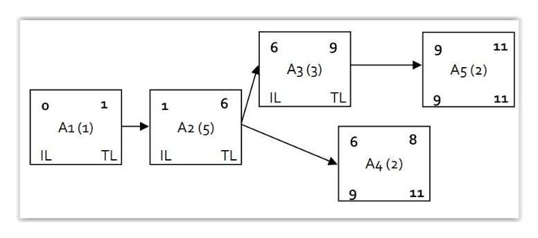
Para el siguiente paso de iteración tomaremos el menor valor, de todas las relaciones de Terminación a inicio recorridas en sentido opuesto a la indicada por la flecha. En el caso de A3 tendremos.
Iteraciones tiempos más Largos
TL(A3)=IC (A5)
Y con ello:
Planning de obra en sistema ROY (iteración 8)
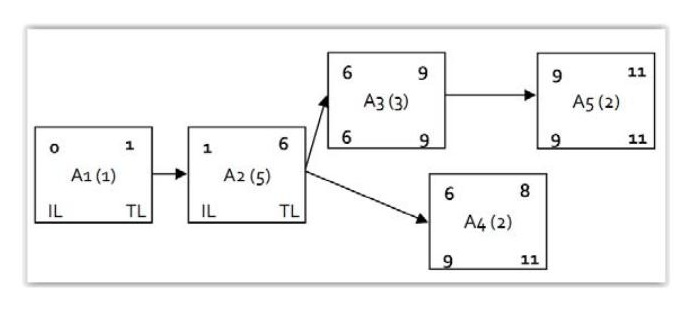
En cambio, en el caso de A2 nos encontramos con dos IL posibles, el de A3 y el de A4. Como hemos indicado debemos tomar el menor TL de aquellas actividades con relación sobre TL (A2) recorrida en sentido opuesto a la dirección de la relación. Esto es:
TL(Ai)=min {IL(actividades de las que Ai es precedente}
Para nuestro caso habremos de tomar por tanto la IL de la actividad A3. De este modo tendremos:
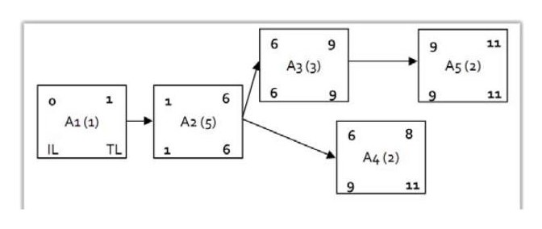
Y también:
Planning de obra en sistema ROY (iteración 10)
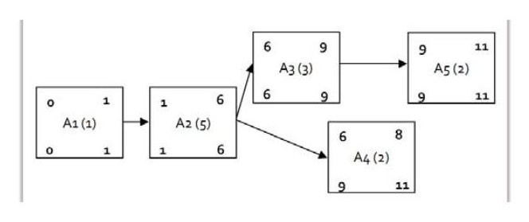
Y quedaría resuelto el problema.
Definición
Holgura: La holgura de una actividad es la máxima cantidad de tiempo que se puede permitir que una actividad se retrase sin incrementarse el tiempo total del proyecto.
La holgura definida de este modo corresponderá a la holgura total que posteriormente diferenciaremos de la holgura libre de una actividad.
La holgura total en el método ROY se calculará como la diferencia existente entre IL e IC o la Existente entre TL y TC, que como podemos ver ambas operaciones tienen el mismo valor.
Holgura
H=TL-TC=IL-IC
En aquellas actividades donde la holgura total vale cero, se considerarán parte del camino crítico del proyecto, pues cualquier retraso que se produzca en una de estas actividades conllevaría un incremento de la terminación global del proyecto.
Definición
Camino crítico: Secuencia de actividades de un proyecto que poseen holgura cero.
Para nuestro caso anterior todas las actividades son críticas salvo la actividad A4, la cual posee una holgura de valor 3, lo que quiere decir que esa actividad puede comenzar en la jornada 7,8, ó 9 sin afectar a la duración total del proyecto en su consunto, y por tanto es la única actividad no crítica, pues incluso podría si comenzamos el día 7 aumentar su duración en 3 días.
Relaciones con demora
Es un tipo de relación similar a las anteriores, pero en las que se define una demora programada dentro de las relaciones representadas. Imaginemos por ejemplo, que la actividad A4 de pintado deba retrasarse un día del comienzo de la actividad de tendido de conductores, con objeto de que los pintores actúen siempre “por detrás” de aquellos espacios en que ya se han colocado los conductores, pero sin necesidad de que hayan terminado el total del trabajo, pues al tener distintos recursos de trabajo, puede darse cierta actividad paralela. El sistema ROY permitiría la representación como:
Planning de obra en sistema ROY (demoras)
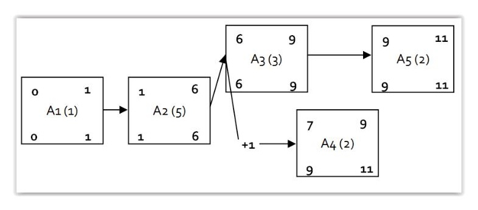
Y se habría definido la relación entre actividad A3 y A4 como una relación inicio inicio con demora de un día entre ella.
En ocasiones, cuando existen diversas actividades sin antecesoras y diversas actividades sin sucesoras, se crean dos nuevas tablas de actividades ficticias llamadas de entrada € y de salida (s) con duración cero para agrupar todas las actividades inicio y fin. Con esto se logra que la resolución siempre comience en una sola actividad y finalice en una sola actividad.
Planning de obra en sistema ROY (e y s)
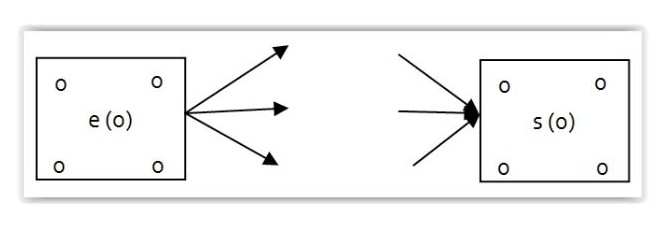
Los métodos basados en PDM tienen la ventaja de resultan bastante sencillos de representar y resolver comparativamente con los sistemas que veremos a posteriori basados en ADM. Por el contrario resultan menos intuitivos en su representación con el proceso real, pues las actividades ocurren dentro de un formato representadas como una tabla (estático), mientras en las técnicas ADM serán las flechas las que representen actividades y los puntos (nodos) serán momentos estáticos de haber alcanzado el final de una actividad y el comienzo de otra.
Las técnicas PDM si bien son prácticamente tan antiguas como las basadas en ADM tuvieron durante muchos años bastante menor popularidad que las técnicas basadas en ADM. Esto es debido a que aunque sean más sencillas de formular, son menos intuitivas por su tipo de representación y por ello las técnicas ADM son visualmente más aptas para el reconocimiento de las actividades y su posterior control.
Por este motivo también son bastantes las ocasiones en que técnicas PDM se combinaban con otro sistema diferente posterior para el seguimiento.
Sin embargo, este sistema está volviendo a tener popularidad entre los programas informáticos, pues en ellos, resulta más sencillo la introducción de datos, y dado que posteriormente el software permite otras representaciones de salida, está ganando adeptos los sistemas en los que el usuario introduce los datos en un sistema PDM y posteriormente el software podrá representar en
distintos diagramas de salida los resultados obtenidos en PDM o en cualquier otro formato de diagrama.
ADM
De sus siglas en inglés Arrow Diagramming Method, o método de diagrama de flechas, son técnicas de representación de proyectos en diagramas de red gráfica, en las cuales las actividades vienen representadas por flechas y los nodos (circulares normalmente en este tipo de representación) resultan tan solo los puntos de unión y por tanto relación entre las distintas actividades.
Los métodos más extendidos de este tipo de técnicas son:
PERT (program evaluation and review technique): o técnicas de revisión y evaluación de programaciones.
CPM (Critical Pacth Metod): Método del camino crítico.
Los dos tipos de problemas anteriores son muy similares, diferenciándose entre ellos en que el primero de ellos PERT emplea como duraciones de las actividades tiempos probabilísticos y el segundo de ellos los problemas CPM emplean tiempos deterministas.
Sin embargo desde el punto de vista de la representación del diagrama, las redes de representación serán exactamente iguales para un mismo proyecto.
Representación de actividades en ADM
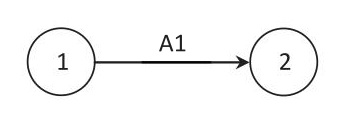
Al estar representada la actividad sobre una flecha en lugar de sobre una tabla, la evolución de la actividad puede irse representando sobre ella e incluso escalarse en función del tiempo de duración de la actividad, lo cual dota de cierta representación gráfica mejorada a las técnicas ADM desde el punto de vista de la representación de un proceso real.
Como veremos a continuación, la representación de redes de grafos con técnicas ADM introduce algunas complejidades que no se producen en técnicas PDM. Además según resolvamos estas complejidades de un modo u otro, puede producirse que un mismo problema de programación posea diferentes
representaciones análogas, pero no idénticas, cosa que no se producía en sistemas basados en la técnica PDM.
Tipos de flujos
Atendiendo al tipo de flujo que se produce entre actividades podremos tener:
Definición
Flujo directo: Es aquel en que el flujo a través de un nodo solo posee una entrada y una salida.
Flujo divergente: Es aquel en que una entrada a un nodo produce más de una salida de él y por tanto el flujo a través del nodo diverge a más de un camino.
Flujo Convergente: Es aquel que produce convergencia en el nodo, es decir que más de una entrada se une para producir una única salida.
Flujo Convergente-Divergente: Es aquel que produce convergencia y también divergencia en el nodo, es decir que más de una entrada se une y producen más de una salida.
Veamos cómo quedarían representadas en ambos sistemas situaciones de prelaciones diferentes definidas en función del tipo de flujo entre ellas.
Flujo divergente
Flujo convergente
Flujo convergente-divergente
Podemos observar que la representación ADM en general implica un mayor número de elementos dentro de un sumatorio nodos-flechas o a lo sumo igual, lo cual tiende a complicar la red respecto a la representación en PDM.
Pero además, determinadas relaciones pueden aún complicar más la red en los casos ADM. Son las conocidas como actividades ficticias.
Imaginemos el siguiente caso de precedencias:
A1 = ninguna
A2= ninguna
A3= A1
A4= A1 y A2.
Su representación en PDM resultaría:
Representación de dos actividades sucesivas de flujo convergente-divergente
PDM
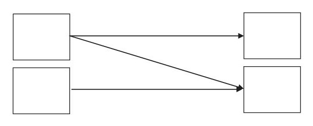
Muy similar al anterior mostrado de flujo convergente-divergente, pero con una relación menos, la de terminación inicio A2, A3.
¿Cómo quedaría representada en caso de técnica ADM?
Representación ADM (actividad ficticia)
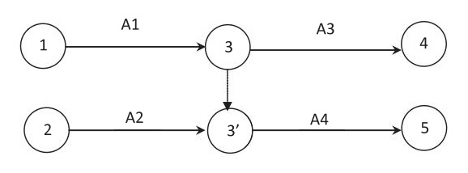
Se ha requerido crear un nodo 3’ (tres prima) y una actividad ficticia de duración cero para la representación de esta condición, en la que A4 posee predecesoras A1 y A2, y A3 sólo posee de predecesora la actividad A1.
Otros casos de actividades ficticias pueden ser flujos del tipo:
Representación actividades sucesivas de flujo divergente
PDM
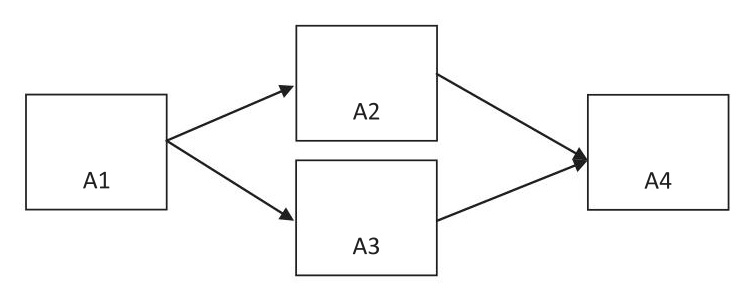
ADM
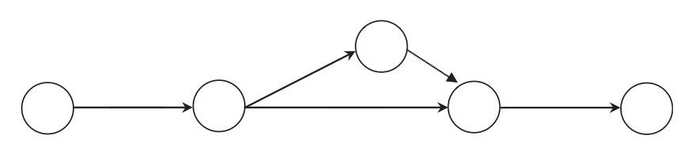
Además este caso puede representarse de más de una forma, ya que podría haberse optado por:
Esquema alternativo:
ADM
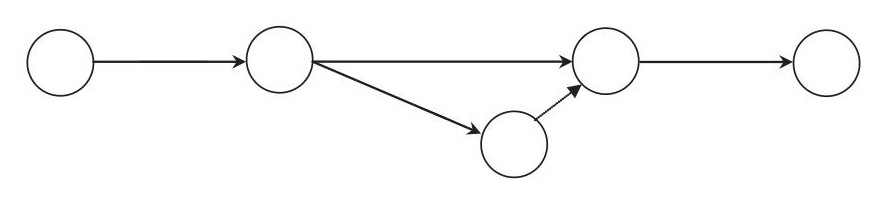
Por lo que una red ADM que pueda requerir actividades ficticias, puede quedar representada en redes homólogas no siempre idénticas para un mismo problema.
También en el caso de las redes ADM, es habitual emplear (igual que en las PDM) un nodo origen único llamado e, también ficticio y otro destino llamado s que agrupe todas las actividades origen y fin respectivamente en un único nodo, que quedaría unido a las anteriores por actividades también ficticias, de duración cero.
Relaciones con demoras.
Las relaciones con demoras en el caso de esquemas ADM exigirán un nodo y actividad ficticia de duración d para su caracterización en la red.
Relación con demora inicio inicio A2, A3
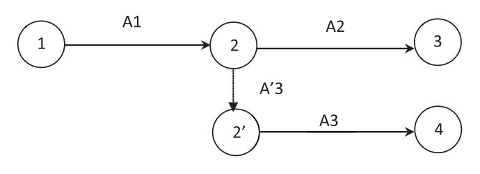
Otros sistemas de representación
Además de las redes de grafos asociadas a problemas de representación de planificaciones y programaciones de proyectos existen otro tipo de diagramas con el mismo objeto que estos. Uno de los más extendidos por su gran capacidad de comprensión visual y sencillez son los diagramas de barras. En los diagramas de barras las actividades se representan en barras habitualmente horizontales, las cuales están vinculadas a la tarea registrada a la misma altura que ellas y cuyo comienzo y fin se encuentra representado por estas barras en escala temporal de izquierda a derecha.
Ejemplo diagrama de barras:
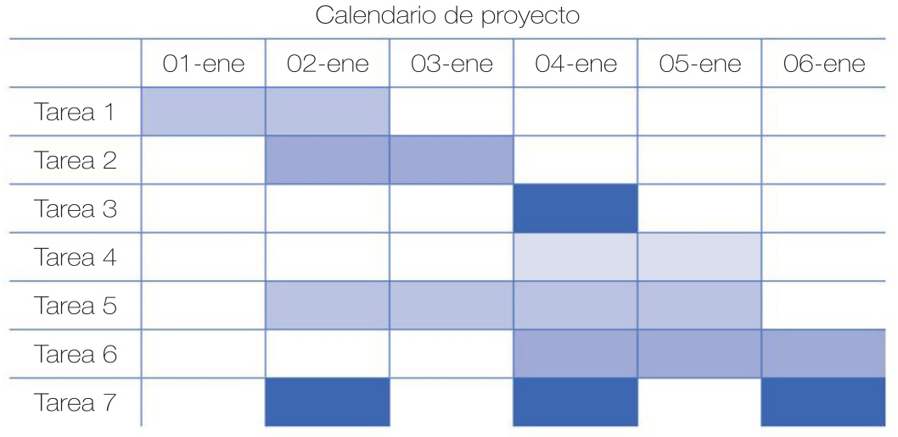
En cada jornada que existe una barra se considera que la actividad se está realizando. En este tipo de diagrama también se pueden representar relaciones entre actividades mediante flechas, y en formato digital nos suele permitir desplazar barras, etc.
También es común que existan subtareas desplegables dentro de aquellas tareas que lo requieran. Este tipo de representación gráfica es quizá una de las más empleadas dada la relativa sencillez de representación, manteniendo un buen nivel de impresión sobre el problema que físico que se pretende representar.
4.2. Relación de tareas. Estimación de duración de las actividades
Tal y como hemos visto el tipo de representación PDM y ADM establecerá el modo en que unas actividades están representadas dentro un diagrama del conjunto de un proyecto. De este modo se puede representar un problema complejo a través de estos diagramas. Los diagramas establecerán en principio un gran número de actividades dentro de ellos que al existir una serie de relaciones con otras tareas, las duraciones de unas y otras estarán estrechamente relacionadas, de modo que algunas tareas poseerán gran relevancia dentro de una planificación mientras otras dispondrán de ciertas holguras que les permitirán solicitudes menos restrictivas en cuanto al plazo en que comienzan y terminan.
En este apartado estudiaremos la estimación de tiempos de actividades así como la naturaleza de su cálculo para los problemas comunes empleados en planificación de proyectos.
Relación de tareas
Como hemos visto, existen una serie de vinculaciones y relaciones entre las tareas o actividades de un proyecto. Indicar que normalmente tareas y actividades tienen la misma acepción en plantificación, aunque algunas veces nos encontramos tareas como partes de una actividad, y en otras no encontramos por ejemplo tareas, subtareas. En general dentro de la representación de grafos o diagramas de barras actividad y tarea serán una misma cosa y estarán representadas por una tabla, una flecha o una barra según el tipo de diagrama.
Cuatro tipos comunes de relaciones entre tareas vienen dadas por las relaciones:
Terminación-comienzo
Comienzo-comienzo
Terminación-Terminación
Comienzo-Terminación
Otras pueden ser estas mismas relaciones pero con restricciones de demoras o adelantos sobre estas vinculaciones.
En función del tipo de diagrama que estemos empleando este tipo de restricciones conllevarán unas representaciones u otras, y complicarán en mayor o menor medida la resolución matemática del programa a desarrollar para nuestro proyecto.
Ya hemos visto estas representaciones en representaciones PDM para sistema Roy, veremos ahora su representación en algunos otros ejemplos.
Relación de Inicio a inicio
Se dará cuando una actividad puede iniciar su actividad cuando la actividad con la que tienen relación haya comenzado. Se representará como una flecha que une el inicio de la actividad A1 con el inicio de la actividad A2.
Relación de predecesora entre A1 y A2 con relación inicio a inicio
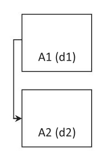
Tal y como se encuentra representado la relación de inicio a inicio querría decir que la actividad A2 no puede comenzar hasta que se considere iniciada la actividad A1. Cabe notar que en el caso en que la actividad A1 no hubiera comenzado en sí en el caso real, es decir no hubiera comenzado la ejecución de la tarea, pero sí la actividad A2 se consideraría igualmente iniciada aunque con ejecución cero desde el punto de vista de la programación, pues si no, no se cumplirían las leyes de flujo dentro del diagrama correspondiente. Así por ejemplo la relación de inicio a inicio en diagramas ADM quedarían representados como:
Esquema x10: relación inicio a inicio en ADM
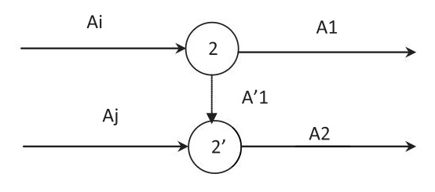
Y por tanto una vez alcanzado el nodo 2 inmediatamente consideramos alcanzado también el nodo dos prima (2’), y por tanto son tiempos de actividad cero. Nótese que como tal en los diagramas ADM no todas las relaciones notadas serán de fin comienzo, por tanto las relaciones de otro tipo deben ser incorporadas a través de nodos o actividades ficticias como transformaciones a relaciones de tipo terminación-inicio, de ahí que deban representarse como actividades terminación inicio en los nodos de donde parten las actividades A1 y A2.
Su representación en un sistema de barras implicaría una representación del tipo:
Ejemplo diagrama de barras:
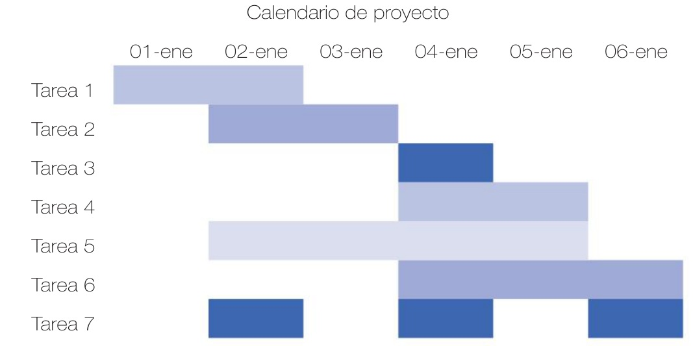
La relación representada que obligaba a iniciar la tarea 2 una vez iniciada la tarea 1, acumula en este caso un retraso en el inicio de la tarea dos que queda representado por línea discontinua.
Si quisiéramos representar un retardo o demora en el caso de ADM, mejor indicaríamos:
relación inicio a inicio en ADM demora A12 (d)
A’12 (d)
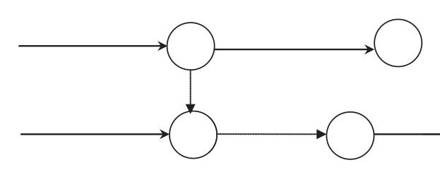
En este caso recuérdese que al nodo 2’ llegaríamos con el mayor valor entre terminación de Ai y Aj y por tanto lo antes que podría comenzar la actividad 2 sería:
IC(A2)=mayor{A1+d,Aj+d}
Relación de inicio a Terminación
Este tipo de relación se dará cuando la actividad A2 no pueda finalizar hasta que se haya iniciado la actividad predecesora. Su representación será:
Relación de predecesora entre A1 y A2 con relación inicio a Terminación
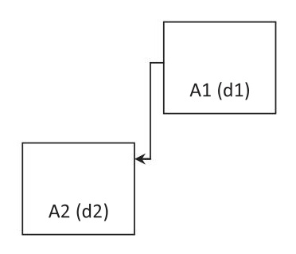
En principio no es un tipo de relación muy usual pues requerirse que una actividad haya dado comienzo para finalizar otra no es lo común, pero siempre puede existir. Por ejemplo en el caso de que un pliego de condiciones exija que un determinado contratista apruebe la finalización de otro. Un caso podría ser aquel en el que nuestra aprobación de trazados y canalizaciones como tarea inicial de la colocación de conductores sea un punto de control para considerar la finalización de la actividad de colocación de canalizaciones y cajas. Pero esto siempre podría expresarse como una división de la actividad A1 en dos tareas enlazadas, y existir una relación de terminación a terminación entre A2 y la primera actividad de A1-1, estableciéndose a partir de ella la actividad A1-2. El tipo de interpretación que hiciéramos de cada caso podría dar lugar a redes no idénticas en cada caso. Otro modo sería establecer un hito (de duración cero), el cuál una vez alcanzado puede finalizar la actividad A2 y comenzar la A1, lo cual es al fin y al cabo una actividad de duración cero que comparte nodo de inicio con A1 y nodo de fin con A2.
Hito
Hito (0)
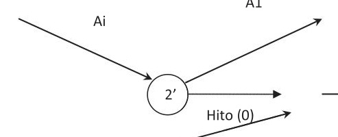
Siendo A1 la actividad predecesora de A1 y Aj la sucesora de A2.
Relación de Terminación a Terminación
Este tipo de relación se dará cuando la actividad A2 no pueda finalizar hasta que se haya finalizado la actividad predecesora. Su representación será:
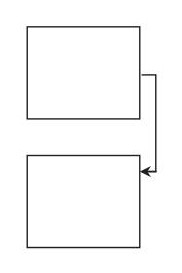
Su representación en ADM puede venir bien porque puedan compartir nodo fin, bien por una relación de ellos a través de una tarea ficticia desde el nodo terminación de A1 al de terminación de A2.
Relación terminación terminación en ADM
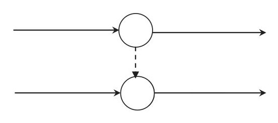
Terminación a inicio
Es la más común e intuitiva dentro de una planificación, ya que habitualmente un oficio o actividad debe finalizar completamente antes de que se inicie la siguiente actividad.
Relación de predecesora entre A1 y A2 con relación de Terminación a Inicio:

En diagrama de barras podrá verse como:
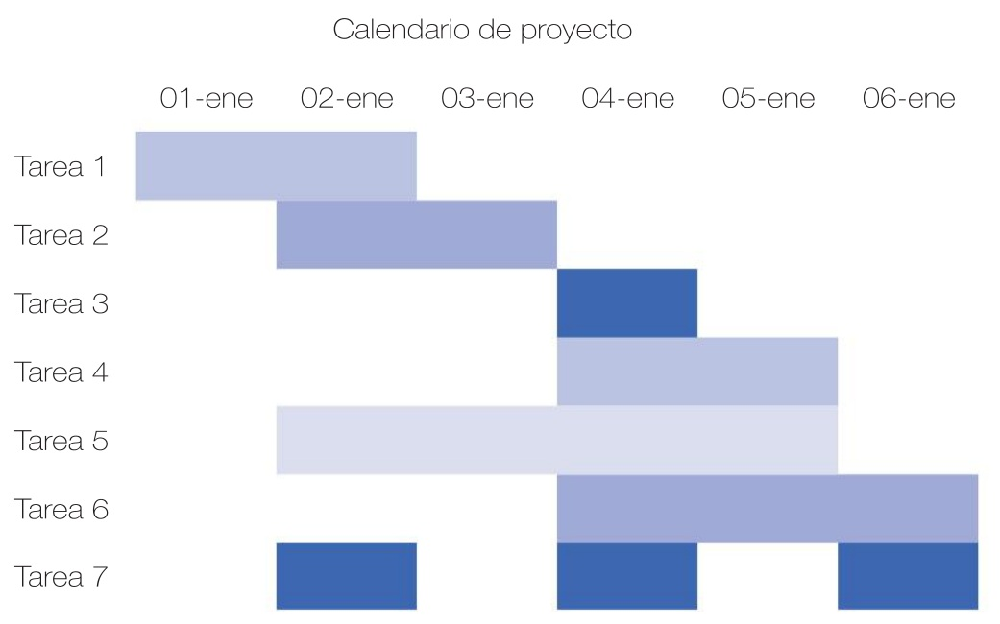
Estimación de duración de las actividades
La duración de una tarea será en general la mejor estimación alcanzable de la duración de una tarea o actividad. Podemos llegar a estas estimaciones bien por tiempos probabilísticos bien por tiempos deterministas.
Escenarios deterministas
En ellos supondremos que las estimaciones realizadas a través de experiencias previas hacen calculables dentro de la matemática convencional (no estadística) el tiempo de trabajo que repercutirá cada tarea.
En ocasiones las tareas se dividen en tiempos previos de preparación, tiempos de ejecución propiamente dicha y tiempos de terminación de la actividad, buscando que subdivisiones más homogéneas de las tareas alcancen estimaciones mejores de cada una de ellas.
De otra parte, las planificaciones se suelen construir en términos temporales en los que una actividad o tarea supone varias jornadas o varias semanas, por lo que no siempre conviene dividir una tarea en tiempos distintos para preparación diaria y posterior ejecución, sino que puede ser mejor estimar el cumplimiento de los recursos sobre la tarea a través de un coeficiente adimensional conocido como porcentaje de despilfarro, que viene a englobar todos aquellos motivos por los cuales no se puede conseguir el rendimiento total esperado para una jornada de trabajo sobre el tiempo estándar.
Tiempo de ejecución de una tarea
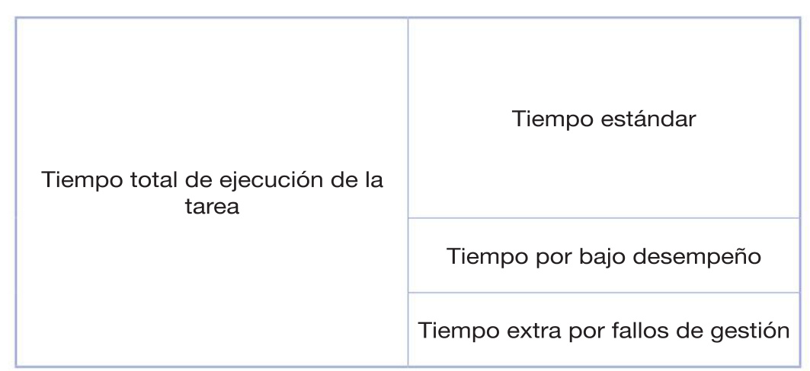
Por tanto el coeficiente de despilfarro será un coeficiente mayor que uno expresado como suma del tiempo estándar necesario para la realización de una tarea, más el tiempo de bajo desempeño medio y el tiempo extra por fallos de gestión máximo permitido aplicado al total de días en que dicha actividad se encuentra en marcha.
Coeficiente de despilfarro ecuación
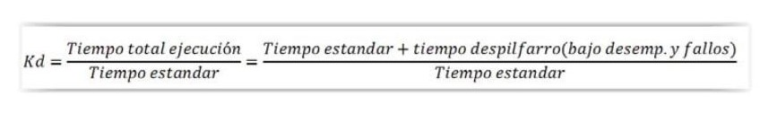
Una vez aplicado el coeficiente de despilfarro en función de todos los parámetros que nos hayan permitido asemejarlo a otras experiencias previas, trataremos de aproximar el tiempo de las tareas como una expresión de la capacidad requerida por operación Capacity Requierment Planning de sus siglas en inglés.
CRP ecuación
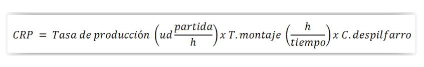
En general se entenderá el coeficiente de despilfarro como el tiempo extra en el que se incurre tanto por bajo desempeño como por fallos de gestión de forma media en una determinada tarea. Con ella obtendremos la capacidad requerida, íntimamente ligara con el tiempo total de desempeño de una tarea a través del número de unidades de recursos que empleemos en la misma. Es decir, la capacidad requerida sería las unidades de trabajo requeridas para cumplir un determinado tiempo de tarea. Dado que como ya vimos la duración de una actividad quedaría expresada como:
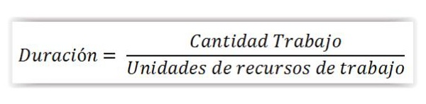
El CRP representaría para nosotros la cantidad de trabajo necesaria por cada unidad de tiempo de planificación, expresada como ud, de partida en función del tiempo escogido en planificación y recursos, es decir la cantidad de trabajo de la actividad se calcularía como CRP por las unidades de la partida o tarea a ejecutar.
Definición
CD: capacidad de diseño. Será las unidades de recursos de trabajo con la que diseñamos la planificación.
Es decir:
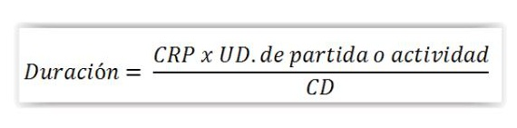
Y obtendremos el tiempo necesario en jornadas, semanas o unidades de tiempo en se haya diseñado la planificación.
Con todo lo anterior en este tipo de escenario determinista, la duración será un número de unidades de tiempo que consideramos cierto en el momento del diseño de la planificación.
Escenario probabilístico
Algunas planificaciones como los problemas PERT emplean tiempos calculados como tiempo probables de ejecución. Para ello definen:
Tp: tiempo pesimista: Es el tiempo máximo en que se prevé que se puede realizar una determinada tarea. Su cálculo, como tiempo probabilístico que se puede estar basado en diferentes puntos de vista.
Aquí no entraremos a calcularlo, pero en general será el tiempo que estimamos que ocurriría en el escenario peor que pueda darse en función de experiencias previas para este tipo de partidas, o teniendo en cuenta los rendimientos peores obtenidos para este tipo de tareas en casos anteriores. En general estos tiempos dependen de cada organización y de los históricos que en ella se han dado.
Definición
To: tiempo optimista: Es el mejor de los tiempos esperados para la partida. En general será una estimación en base a los mejores rendimientos que se hayan dado en nuestra organización.
Tm: tiempo mas probable. Será el tiempo más probable en que de la actividad, normamente se emplea como tiempo más probable el que nos resulta del cálculo de la actividad a través de los rendimientos medios de la actividad. También puede conocerse por tiempo normal.
De nuevo serán tiempos basados en experiencias previas a través de la media de rendimientos.
Nótese que el tiempo más probable en general no tiene porqué cumplir:
Ecuación de tiempo más probable:
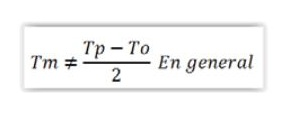
En lugar de esto el tiempo normal será el que cumple con un rendimiento medio de la operación y por tanto el tiempo más probable en torno al cual estará la operación. De otra parte el tiempo optimista y el tiempo pesimista miden cuanto peor y cuanto mejor ha llegado a ser posible alcanzar en alguna ocasión para actividades como esa.
Con esto, el tiempo propuesto para los problemas tipo PERT (que suponen para las actividades una distribución Beta de Euler) se llamará Te (tiempo esperado) y saldrá de la expresión:
Tiempo esperado:
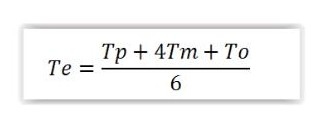
Definición
Te: Tiempo esperado: tiempo esperado para una actividad en problemas tipo PERT. Es el que aplicamos en las actividades del grafo.
Para los problemas de planificación con duraciones de tiempo así calculado podremos obtener la varianza y desviación estándar a partir de las expresiones:
Expresiones de varianza en PERT
Normalmente en el diseño de la planificación entenderemos que los valores de duración de las actividades resultan fijos, o al menos lineales en función de los recursos. Posteriormente se realizarán los seguimientos de las actividades con duraciones reales, lo cual modificará la planificación original.
4.3. Recursos humanos y materiales asignados a las actividades
El proceso de diseño de una planificación implicará por una parte el desarrollo de una planificación apropiada al montaje decido para acometer las instalación de una determinada instalación de electricidad. Una vez obtenidas las diferentes actividades y su relación, en general, su secuenciación de actividades y sus restricciones (predecesoras y sucesoras), se realizará el diseño de la red o diagrama que consideremos idóneo para dicha planificación.
Posteriormente habremos de determinar los tiempos de duración deseados y obtener la planificación inicial. Para la correcta ejecución de obra en un siguiente paso tenemos que determinar los recursos necesarios para cada actividad y realizar un proceso de asignación coherente y factible para el correcto cumplimiento del plan. Habitualmente denominamos programación a esta planificación en la que hemos asignado determinados recursos a cada actividad del proyecto.
La programación debe permitirnos mejorar la organización de los recursos para que se produzca un montaje con cierta estabilidad en la carga de trabajo de los recursos, procurando que su asignación a actividades tenga estabilidad durante las distintas fases de la obra. En general cuando sobreasignamos trabajo a un recurso se producirá un incumplimiento de la planificación por exceso de carga de trabajo a un recurso, mientras que si determinadas actividades que requieren asignaciones bajas para los recursos producen infraasignación en partes de la obra caeremos en costos superiores a los esperados por falta de rendimiento de los recursos. Por esto el proceso de asignación suele repercutir de forma iterativa en modificaciones sobre la planificación original, con objeto de alcanzar cargas de trabajo los más estables posibles de los recursos de trabajo a lo largo del conjunto de la obra, o en el peor de los casos tratar que contrataciones y despidos se produzcan las menores veces posibles a lo largo de la programación.
Por otro lado como hemos visto en puntos anteriores, determinadas tareas son susceptibles de acortar su duración si asignan más recursos, lo cual puede resultar interesante para absorber imprevistos o procurar ganar tiempo de obra total.
También existirá el recurso de realización de horas extraordinarias si estas son posibles como forma de equilibrar programaciones a través de dotar de recursos extraordinarios a aquellas actividades críticas para la programación y aquellas que posean gran número de sucesoras con objeto de garantizar una determinada carga de trabajo para los recursos de las actividades posteriores.
Recursos humanos
Los recursos humanos son los recursos tipo trabajo destinados a la ejecución física de las actividades de instalación. A través de rendimientos y coeficientes de despilfarro son directamente asignables a las tareas. En general el número de este tipo de recursos dentro de un cierto margen suelen comportarse de forma lineal e inversamente proporcional a su asignación con la duración total de una tarea a través de la ecuación:
Duración= (Cantidad Trabajo)/(Unidades de recursos de trabajo)
Los recursos tipo trabajo se considerarán en general como asignables parcialmente a las actividades de los proyectos de modo que un recurso pueda actuar parcialmente sobre una actividad.
No obstante cada recurso puede poseer un calendario igual o diferente al del proyecto, es el caso de programaciones que se extiendan a jornadas de doble turno o calendarios de 24 horas de trabajo, y también en caso de trabajadores a tiempo parcial. Por este motivo deben predefinirse los calendarios del proyecto y los de los recursos por separado y siempre antes de comenzar el proceso de asignación a tareas.
Aquellas actividades donde la asignación de recursos no supongan reducciones de la duración de la actividad habrán de definirse como actividades de duración fija, de modo que una asignación de recursos modificaría la cantidad de trabajo (y por tanto el coste de la actividad), pero no su duración.
Anteriormente a la asignación de los recursos, habrá de definirse la hoja de recursos, donde editaremos los recursos disponibles en función de una serie de parámetros.
Los recursos de trabajo se calcificarán en general por las siguientes parámetros:
Categoría profesional: Oficial 1a, 2a, etc.
Coste marginal: Será el coste total del recurso por tiempo €/hora.
Coste hora extra: Para aquellos recursos y obras donde están disponibles se expresará el coste total de €/hora extra.
Costo por uso: Algunos recursos tipo trabajo pueden incorporar costos por el hecho de su empleo. Es el caso por ejemplo de trabajadores de empresas temporales donde el hecho de contar con ellos en una determinada jornada implicará un costo fijo en € que no dependerá del tiempo de asignación.
Calendario recurso: horario ordinario en el que el recurso está disponible para la programación.
Hoja de recursos:
Recurso Tipo Grupo Coste estándar
Coste
Coste/
uso Calendario
Extra
Oficial 1a Electricista Trabajo Of1 18,65 €/h 16,84 €/h 0 Estándar
Oficial 2a Electricista Trabajo Of2 17,58 €/h 14,67 €/h 0 Estándar
Ayudante Electricista Trabajo Ay1 16,99 €/h 14,19 €/h 0 Estándar
En programaciones más amplias, suelen emplearse los recursos humanos de forma agrupada, es decir, por cuadrillas de trabajo, o grupos predefinidos en función de los mismos parámetros que en el caso de recursos unitarios.
Por otro lado las tareas de los proyectos deben definirse de modo tal que un recurso de trabajo no puede estar asignado a dos tareas a la vez, salvo que este recurso sea múltiple o se asigne de forma parcial. Un recurso puede ser múltiple cuando los definimos de modo genérico el número de unidades de un tipo de recurso que poseemos. Ejemplo:
Hoja de recursos, Uds. máximas de recursos:
| Oficial 2a Electricista | Trabajo | Of2 | 200% | 17,58 €/h | 14,67 €/h | 0 | Estándar |
|---|---|---|---|---|---|---|---|
| Ayudante Electricista | Trabajo | Ay1 | 100% | 16,99 €/h | 14,19 €/h | 0 | Estándar |
Según la tabla anterior por tanto podrían asignarse hasta 3 tareas a la vez a un recurso oficial 1a, 2 oficiales de 2a y un único ayudante en actividades del proyecto.
La ventaja de este tipo de definición resulta en aquellas programaciones que se realizan mediante programas informáticos, en los cuales se pueden recalcular automáticamente las duraciones de las actividades según el número de recursos disponibles en cada hora de trabajo, pues si sólo asignamos a la vez
una tarea un recursos of1a, la programación recalculará el tiempo de ejecución supuestas las 3 Uds. disponibles en ese momento del proyecto.
Sin embargo, no se permitirá la asignación en un mismo momento de of1a a 4 actividades, por lo que si nuestra programación tuviera definidas en la planificación 4 actividades simultáneas de of1a en un instante del proyecto, se produciría una sobreasignación que nos obligaría a reprogramar este instante actuando de alguna de las siguientes formas:
Reasignación de otro recurso compatible (reemplazar recurso)
Modificación de la secuenciación de tareas (cambio de planificación)
Permitir ampliación de horario del recurso y/o asignación parcial a las tareas
A continuación mostramos estas distintas posibilidades y su influencia en el esquema de planificación en diagrama de barras:
El día dos de enero se habrá caído en una sobreasignación de recurso of1 que recordemos se encontraba en nuestra hoja de recursos en un total máximo de 3ud.
Reasignación del recursos:
En este primer caso se ha supuesto la posibilidad de que la tarea 7 pueda ser realizada por oficiales de 2a en lugar del grupo of1a.
Modificación de secuenciación
Esta modificación de planificación puede realizarse como incorporación de una nueva vinculación entre la primera tarea en la que termina el recurso of1 y la primera sobreasignada, es decir, como una vinculación terminación a inicio entre la tarea 1 y la tarea 7.
Asignación recursos (modificación):
Asignación parcial/horario extraordinario
Asignación recursos (Asignación parcial):
Obsérvese que la asignación parcial en las tareas 1 y 7 el día 2 de enero implica el recálculo de la duración de las tareas.
Por otro lado la asignación mediante horario extraordinario si éste es suficiente, implicaría la aplicación de costes extra a la partida por aumento del coste marginal de los recursos en estos horarios. Para ver su muestra abríamos de realizar una escala menor en el eje temporal, de modo que se permitiera que la actividad no quedara ligada al calendario del recurso y permitiera una asignación en horario extraordinario.
Asignación recursos (Horas extra):
El uso combinado de estas técnicas nos permitirá decidir en cada caso la solución más conveniente en función de los condicionantes existentes para la programación global.
Recursos materiales
Dado que la duración de las tareas está basada en un cálculo sobre los recursos de trabajo, la afectación de los recursos humanos sobre los que diseñamos la planificación tiende a ser grande, pudiendo modificar bastante una planificación.
Menos afectación suelen tener sobre la planificación, al menos inicialmente, los materiales. Sin embargo un retraso de materiales podría provocar desastrosos efectos sobre la programación.
La asignación de materiales necesarios para la ejecución de una tarea siempre que los recursos materiales estén suficientemente disponibles repercutirá un espacio temporal para la utilización de éstos (necesario para los MRP), y una imputación en coste del recurso para la tarea.
Sin embargo no modificará el trabajo de la tarea, ni su duración, ni afectará al número de unidades de asignación de recursos de la actividad.
La correcta asignación de recursos materiales resulta muy relevante para la correcta gestión de pedidos de materiales, así como los cálculos de costes de proyectos.
Los recursos de material se calcificarán dentro de la hoja de recursos en general por los siguientes campos:
Nombre del recurso
Etiqueta del material: Con objeto de no confundir diferentes materiales en planificaciones muy extensas y facilitar el acceso al material a través de por ejemplo etiquetados de los materiales, se incluirá este campo en la hoja de recursos.
Grupo: Con objeto de agrupar posteriormente familias de materiales para pedidos.
Coste: Será el coste total del recurso en €. Dado que este caso el coste de un material no será un coste asociado al tiempo sino absoluto, son importantes las unidades empleadas para la definición del precio.
En general los programas de planificaciones no expresan en el precio en base a qué tipo de unidades se ha definido ya que éstas no afecta a tiempos de duración, sino solo a costes, teniendo en cada asignación que asegurarse de estar usando las Uds. correctas.
Costo por uso: Algunos recursos tipo material pueden incorporar costos por el hecho de su empleo. Es el caso de por ejemplo lotes de trasporte, gastos de pedido, etc.
Tipo de imputación: Este campo sirve para definir en qué momento se imputa el coste de un recurso a una tarea. Los tres tipos básicos de imputación serán al inicio, al fin o de forma prorrateada. En general los recursos tipo material suelen estar vinculados al inicio de las partidas, pues deben estar disponibles en el momento que una partida se comienza a ejecutar.
Tipos imputación:
Sin embargo en actividades muy extensas en que los materiales a emplear pertenecen a diferentes ciclos de pedido puede interesarnos el modo prorrateo (habitualmente empleado en recursos tipo trabajo). La imputación a fin puede ser empleada habitualmente por ejemplo en caso de materiales o actividades instalados por subcontratistas, donde la imputación no se completará hasta el fin de una determinada actividad.
Hoja de recursos materiales:
| CGP | Material | CGP | 12150908 | 20,43 | 0 | Inicio |
|---|---|---|---|---|---|---|
| Conductor azul 2,5 mm | Material | C1 | 12150910 | 0,42 | 0 | Prorrateo |
| Conductor Negro 2,5 mm | Material | C2 | 12150911 | 0,42 | 0 | Prorrateo |
| Conductor Tierra 2,5 mm | Material | C3 | 12150911 | 0,42 | 0 | Prorrateo |
| Tubo corrugado | Material | T1 | 12150911 | 0,42 | 0 | Prorrateo |
Debe notarse que la Ud. en que medimos el precio determinará las Uds. a expresar en el momento de la asignación, pues este precio en programaciones suele reconocerse tan solo como un valor absoluto.
En el caso anterior viene expresado el primer material como UD. mientras los otros dos expresan el precio por metro de los mismos.
Asignación material al planning:
Asignación recursos (Materiales):
Al realizar la asignación por tareas estaremos por tanto obteniendo calendarios de necesidades de materiales así como presupuesto de materiales de obras, datos que generalmente podemos extraer en forma de informes a partir de los programas de planificación de obras.
4.4. Calendario de recursos para actividades
Como hemos podido ver en el proceso de asignación, obtenemos planificaciones de recursos que nos permitirán extraer por separado las necesidades planificadas de materiales y recursos tipo trabajo. A estar planificaciones de recursos las llamamos calendarios de un determinado recurso.
Los calendarios de recursos deben ser herramientas sobre las que plantear por un lado la organización de personal (o recursos tipo trabajo como maquinaria) y por otro los materiales y por tanto toda la gestión logística, compra, almacenes, etc.
Es habitual que se planteen de forma separada calendarios de recursos humanos, medios auxiliares y materiales, dado que afectará de forma más decisiva a departamentos diferentes, y a su vez, que se emplee un calendario agregado de cara a la financiación de la obra con los costes de todos los recursos de forma agrupada (presupuesto general). Este tipo de informes están disponibles en la mayoría de los programas empleados en la realización de programaciones a través de informes que en los mejores casos también serán personalizables en función de las necesidades concretas.
Además los calendarios de actividades tendrán el objetivo de servir de base para la administración y control de los proyectos, pues a partir del momento en que éstos se hayan empleado como previsión de contrataciones, compras, etc., será de vital importancia que los valores de estos calendarios se cumplan en la mayor medida posible, dado que todos los cálculos de optimización deben permanecer en un entorno los suficientemente cercano a los empleados inicialmente. De no ser así, se producirían sobrecargas de trabajo o infracargas de trabajo en el caso de los recursos de trabajo, y tiempos de espera (y por tanto costes) altos o escasez de materiales todos ellos completamente desaconsejables para la correcta organización de un montaje.
Recordaremos inicialmente el esquema seguido para la obtención de los calendarios de recursos.
Esquema de realización de una programación:
Definir proyecto
Calendario y horarios
Tareas
Duraciones estumadas
Asignación recursos
Mejora del plan, nuevas vinculaciones de tareas
Fin de la programación
Es decir, inicialmente el plan se definió a través de una serie de actividades o tareas a realizar así como una cierta secuenciación obligada. En un segundo paso se establecen sus duraciones de las actividades en función de una serie de recursos esperados para cada actividad. En un paso posterior se asignan los recursos.
Hay que tener en cuenta que esta asignación de recursos nos producirá una situación inicial en la cual pueden darse situaciones de incompatibilidad horaria para los recursos, y por tanto puede requerir una cierta reorganización de tareas, que puede llevar a distintos casos:
Nueva vinculación de tareas en secuencias diferenciadas o más restrictivas
Separación de tareas
Ampliación de los recursos necesarios o de sus horarios/calendarios
Combinaciones de las anteriores.
Calendario de recursos para actividades
Conocido también como uso de recursos, este tipo de diagrama nos mostrará recurso a recurso dónde posee asignación dentro de la planificación.
Es en cierto modo un cuadro de una planificación, pero el principal esquema que sigue es el de los recursos en lugar de las tareas, de modo que por cada línea representada podrá verse a qué tarea se encuentra asignado cada recurso individualmente en cada momento de obras.
De este modo si un recurso posee más del 100% de asignación en un momento concreto de la planificación (los programas los mostrarán habitualmente en color rojo) debe ser resuelto por alguno de los métodos del apartado anterior.
Calendario de recursos:
| Recurso | 09-11 | 11-13 | 13-15 | 15-17 | 17-19 | 19-21 |
|---|---|---|---|---|---|---|
| Ofi1a (1) | Tarea 1 | Tarea 1 | ||||
| Ofi1a (2) | Tarea 2 | Tarea 2 | ||||
| Ofi1a (3) | Tarea 3 | Tarea 3 | ||||
| Ofi2a (1) | ||||||
| Ayud. (1) | Tarea 3 | Tarea 3 | ||||
| Material | 09-11 | 11-13 | 13-15 | 15-17 | 17-19 | 19-21 |
|---|---|---|---|---|---|---|
| Material 1 | 5 Ud. | |||||
| Material 2 | 7 Ud. | |||||
| Material 3 | 15 m | |||||
| Material 4 | ||||||
| Material 5 | 15 m |
Donde se han marcado en rojo los horarios de 17-19, que implicarían horas extra de recursos, aunque en el esquema mostrado no ha sido necesario el uso de este horario extra.
Operario en montaje de instalaciones
4.5. Limitaciones
La Teoría de las limitaciones o restricciones (TOC) fue descrita por primera vez por Eli Goldratt al principio de los 80 y desde entonces ha sido ampliamente utilizada en los proyectos.
Es un conjunto de procesos de pensamiento que utiliza la lógica de la causa y efecto para entender lo que sucede y así encontrar maneras de mejorar. Está basada en el simple hecho de que los procesos multitarea, de cualquier ámbito, solo se mueven a la velocidad del paso más lento. La manera de acelerar el proceso es utilizar un catalizador y lograr que trabaje hasta el límite de su capacidad para acelerar el proceso completo. La teoría enfatiza la dilucidad, los hallazgos y apoyos del principal factor limitante de cada caso. En la descripción de esta teoría estos factores limitantes se denominan restricciones o “cuellos de botella”.
Recuerda
El estudio de los “cuellos de botella” constituye una de las estrategias más extendidas para el estudio de las limitaciones, ya que resultan los limitantes y el control y detección de los mismos permite a las organizaciones obtener mejores resultados.
Por supuesto las restricciones pueden ser un individuo, un equipo, una pieza de un aparato o una política local, o la ausencia de alguna herramienta o pieza de algún aparato.
La idea medular es que en toda empresa hay, por lo menos, una restricción. Si así no fuera, generaría o podría generar ganancias ilimitadas. Las restricciones son factores que bloquean a la empresa en la obtención de más ganancias o beneficio, toda gestión que apunte a ese objetivo debe gestionarse focalizando en las restricciones.
Lo cierto de que TOC es una metodología sistémica de gestión y mejora de una empresa. En pocas palabras se basa en las siguientes ideas:
La Meta de cualquier empresa con fines de lucro es ganar dinero de forma sostenida, esto es, satisfaciendo las necesidades de los clientes, empleados y accionistas. Si no gana una cantidad ilimitada es porque algo se lo está impidiendo: sus restricciones.
Contrariamente a lo que parece, en toda empresa existen sólo unas pocas restricciones que le impiden ganar más dinero. Restricción no es sinónimo de recurso escaso. Es imposible tener una cantidad infinita de recursos. Las restricciones, lo que le impide a una organización alcanzar su más alto desempeño en relación a su Meta, son en general criterios de decisión erróneos.
Limitación de mercado
La demanda máxima de un producto está limitada por el mercado. Satisfacerla depende de la capacidad del sistema para cubrir los factores de éxito establecidos (precio, rapidez de respuesta, etc.).
Restricción de materiales
Se limita por la disponibilidad de materiales en cantidad y calidad adecuada. La falta de material en el corto plazo es resultado de mala programación, asignación o calidad.
Restricción de capacidad
Es el resultado de tener equipo con que no posee capacidad suficiente para satisfacer la demanda que de ellos se espera o la cual les ha sido programada.
Restricción logística
Restricción inherente en el sistema de planeación y control de producción. Las reglas de decisión y parámetros establecidos en éste sistema pueden afectar desfavorablemente en el flujo suave de la producción.
Restricción administrativa
Estrategias y políticas definidas por la empresa que limitan la generación de mayor capacidad de respuesta ante mayores solicitudes de la demanda.
Restricción de comportamiento
Actitudes y comportamientos del personal. La actitud de “ocuparse todo el tiempo” y la tendencia a trabajar lo fácil antes que aquellas labores más complejas, redunda en una limitación de las organizaciones hacia su crecimiento.
4.6. Diagrama de Gantt: método constructivo: Gantt
para seguimiento de actividades, Gantt para el control de la carga de trabajo
El diagrama de GANTT o diagrama de barras, es uno de los modelos más empleados en el seguimiento de actividades, debido a su buena interpretación visual y sencillez de entendimiento por parte de personal no necesariamente acostumbrado a la interpretación de planificaciones.
Resulta muy útil para la programación de obras en las que aproximadamente se conocen las fases de montaje y secuencia de actividades lo cual es muy habitual en las instalaciones eléctricas pues el modelo de montaje general en edificios tiende a ser aproximadamente similar de unas obras a otras. Esto es debido a que en su representación, el diagrama de Gantt las relaciones existentes entre actividades son menos visibles e intuitivas que en aquellos que se basan en diagramas de redes de grafos. De este modo, es un modelo muy válido para el seguimiento de obras similares unas a otras, pero para proyectos más complejos que requieran organizar un gran número de tareas y su optimización previa no sea demasiado conocida, serán más interesantes redes de grafos para una primera aproximación a la optimización de las secuencias del proyecto.
Diagrama de Gantt:
Se han mostrado relaciones de terminación a inicio en negro, inicio a inicio en azul y terminación a terminación en rojo.
Debe su nombre a Henry Laurence Gantt, quien a principios del siglo XX popularizó su uso.
En la actualidad y gracias a los sistemas basados en ordenadores las posibilidades de los diagramas de barras se han multiplicado, gracias a las posibilidades de relaciones y cálculos de caminos críticos que ofrecen los programas informáticos.
Construcción del diagrama de Gantt
El esquema de montaje de un diagrama GANTT seguirá las secuencias habituales de la construcción de planificaciones de proyectos, es decir:
Definir proyecto
Calendario y horarios
Tareas
Duraciones estimadas
Asignación recursos
Mejora del plan, nuevas vinculaciones de tareas
Fin de la programación
En el presente apartado, nos centraremos en el procedimiento de construcción del diagrama de Gantt para obras de montaje eléctrico desde el punto de vista de los programas informáticos que emplean este diagrama como soporte, ya que el diagrama para otros métodos no informáticos posee mucho menos interés. Además el diagrama de Gantt resulta muy extendido entre los programas de uso común en obras, y el presente formato de construcción que se presentará es el habitual en muchos de estos programas.
En una fase inicial se definirán los calendarios y horarios de proyectos en los que están admitidas la realización de actividades. Estos calendarios de proyecto podrán o no ser iguales a los de recursos. Se realizarán escalas temporales desde la fecha de inicio de proyecto en adelante. Deben tenerse en cuenta cálculos de días laborales, festivos, jornadas intensivas, etc....
A modo de ejemplo mostraremos la creación de un proyecto en diagrama Gantt de una instalación típica de vivienda. Para ella deberemos establecer al menos los siguientes datos:
Inicio del proyecto (fecha)
Calendario del proyecto (horario de trabajo del proyecto).
Supondremos que el proyecto comenzará el día 01 de enero del año 2015. Para el horario estableceremos:
Jornada laboral de L a V de 8:00 h a 12h y 13h a 17h, es decir jornada de 8 horas con un descanso para comida de 12 a 13 horas.
En cuanto al calendario laboral, estableceremos:
Festivos el día 01 enero y 6 enero
Estas características son necesarias para encajar los horarios de los trabajos del proyecto y de los recursos en el horario de la programación, así como el cálculo de la duración en jornadas de las distintas tareas.
En una segunda fase se realizará un listado de actividades. Estas actividades pueden a su vez pertenecer a divisiones mayores como capítulos o fases de una obra o no hacerlo, pero en general en este tipo de diagrama es conveniente que si el número de actividades es relativamente alto se procure estructurar en distintos niveles como pueden ser:
Fases de obras: inicial, media, final, por zonas, etc.
Capítulos de obras: Reunión de tareas que afectan a un determinado oficio, empresa, etc.
Tareas: Tareas principales de obras, que a su vez pueden contener distintas subtareas o repetirse en cada fase/capítulo...
Esto permitirá la contracción o expansión de determinados tareas en líneas principales que permitan visualizar mejor la obra se su conjunto respecto a las tareas actualmente en ejecución:
Estructuración de un diagrama de Gantt
Dado que la representación de un diagrama Gantt no establecerá gran visibilidad de las relaciones de tareas, es interesante que en la medida de lo posible se describan las actividades con cierta secuenciación correlativa, para evitar que se encuentren a la vez en ejecución tareas muy distantes entre ellas.
La relación de tareas y estructura dará lugar a la lista de actividades del proyecto, con las correspondientes sangrías en su caso para establecer un árbol de actividades con tareas y subtareas.
En un ejemplo de instalación de vivienda podría ser una secuencia de actividades tal que:
Ejemplo de árbol de actividades
A1 Replanteo
A2 Canalización
Apertura rozas y huecos
Colocación canalizaciones y cajas
Tapado de rozas y huecos
A3 Instalación conductores
Tendido de conductores
Conexión en cajas de derivación
A4 Pintura
A5 Conexionado
Colocación y conexión mecanismos
Conexión de CGMP y Protecciones
Pruebas
Donde las tareas se muestran en negrita y las subtareas se les han aplicado una sangría de texto.
Para cada actividad habrá de determinarse sus relaciones para con otras actividades (secuenciación) así como la duración estimada. Estas relaciones, en general serán de terminación a fin pues será este el tipo de relación principal expresada en los métodos de entrada en la mayoría de programas de construcción de diagramas Gantt, debiéndose establecer otras relaciones por otros medios como hitos que marquen puntos significantes del proyectos y que sirvan de punto de relación con otras actividades.
Imaginemos que queremos indicar para el programa anterior dos hitos, a través de puntos de control, uno que permita dar por finalizados y aprobados los trabajos de tendidos y conexionados hasta justo antes de la pintura y otro que de por terminados los trabajaos eléctricos:
Incorporación de hitos/puntos de control
A1 Replanteo
A2 Canalización
Apertura rozas y huecos
Colocación canalizaciones y cajas
Tapado de rozas y huecos
A3 Instalación conductores
Tendido de conductores
Conexión en cajas de derivación
Hito 1- punto de control 1
A4 Pintura
A5 Conexionado
Colocación y conexión mecanismos
Conexión de CGMP y Protecciones
Pruebas
Hito 2- punto de control 2
Por definición los hitos tendrán duración cero, y se han incorporado antes del comienzo de los trabajos de pintura en el caso del hito 1 y por tanto en la línea anterior a ésta, y justo después de las pruebas funcionales de la instalación en el caso del hito 2.
En el siguiente paso se definirán las secuencias de las tareas a través de las tareas que son antecesoras a cada una de ellas. Para ello, previamente asignaremos un número correlativo a cada una de las líneas creadas anteriormente tanto tareas como subtareas para poder identificar mediante numeración cada una de ellas:
Secuenciación a través de actividades predecesoras
| Id | Actividad | Predecesoras | |
|---|---|---|---|
| 1 | A1 Replanteo | ||
| 2 | A2 Canalización | ||
| 3 | Apertura rozas y huecos | 1 | |
| 4 | Colocación canalizaciones y cajas | 3 | |
| 5 | Tapado de rozas y huecos | 4 | |
| 6 | A3 Instalación conductores | ||
| 7 | Tendido de conductores | 5 | |
| 8 | Conexión en cajas de derivación | 7 | |
| 9 | Hito 1- punto de control 1 | 8 | |
| 10 | A4 Pintura | 9 | |
| 11 | A5 Conexionado | ||
| 12 | Colocación y conexión mecanismos 9 | ||
| 13 | Conexión de CGMP y Protecciones | 12 | |
| 14 | Pruebas | 13 | |
| 15 | Hito 2- punto de control 2 | 14 |
Nótese que las tareas que contienen subtareas no se considera que puedan tener predecesoras, sino que se indican sobre las subtareas incluidas en ellas. Como ejemplo de ello puede verse que la actividad 2 A2 Canalización, no pose ninguna actividad antecesora. En lugar de ello, su primera subtarea no 3 Apertura de rozas y huecos, es la que posee como antecesora la actividad 1 replanteo.
Se ha considerado que después del hito 1 pueden comenzar tanto los trabajos de pintura como de conexionado, suponiéndose por tanto que las limitaciones de la realidad lo permitan, es decir, al menos:
Que dispongan de recursos diferentes
Que puedan trabajar simultáneamente en dos puntos diferentes de la obra, sin limitaciones por cruces o esperas de secado entre ellos, etc.
Seguidamente deberán aproximarse las duraciones de las tareas. Para ello, se atenderá a los rendimientos y mediciones realizados como la mejor aproximación posible. Unas posibles mediciones para el caso que nos ocupa podrían reflejar las siguientes partidas en base a bancos de precios:
| No partida 1 | Uds ud | Descripción de partida CUADRO PROTEC.ELECTRIFIC. BÁSICA | Medición 1 |
|---|---|---|---|
| 2 | m | CIRCUITO MONOF. POTENCIA 10 A. | 25 |
| 3 | m | CIRCUITO MONOF. POTENCIA 16 A. | 20 |
| 4 | m | CIRCUITO MONOF. POTENCIA 20 A. | 12 |
| 5 | m | CIRCUITO MONOF. POTENCIA 25 A. | 10 |
| 6 | ud | CONST.) AYUDA ALBAÑ. INST. ELECTRIC.(c/100 m2 | 1 |
| 7 | ud | INSTALACION DE MECANISMOS | 1 |
| 8 | m2 | P. PLÁST. LISA MATE ESTÁNDAR OBRA B/COLOR | 270 |
De las anteriores mediciones puede también extraerse los rendimientos y mediciones de tiempo que cada partida y recurso asignado, de modo que podremos tener una aproximación a los tiempos que deben emplearse en cada partida, que sirvan de referencia para la imputación a las distintas tareas.
Del informe de presupuesto de mano de obra podemos obtener datos como qué tipos de recursos de trabajo requeriremos en cada partida, rendimientos en la misma, etc.
En nuestro caso, el estudio de las distintas partidas y sus recursos nos da por resultado total en horas de trabajo:
horas de trabajo de proyecto según mediciones
Medición Ud Descripción
8,47 h Oficial primera
8,47 h Peón ordinario
14,15 h Oficial 1a electricista
13,65 h Oficial 2a electricista
27 h Oficial 1a pintura
27 h Ayudante pintura
Si entendemos como válidos los valores de los descompuestos de las mediciones, la correcta realización del proyecto implicará los tiempos totales anteriores de los recursos trabajo para completar el proyecto del montaje de la instalación.
Por otro lado los diferentes descompuestos de cada partida nos muestran las asignaciones de los diferentes recursos en las distintas partidas:
Partidas con participación
Medición Ud Descripción Precio/ud
del recurso
8,47 h Oficial primera 18,65 6
8,47 h Peón ordinario 16,24 6
14,15 h Oficial 1a electricista 18,52 1,2,3,4,5,7
13,65 h Oficial 2a electricista 17,34 2,3,4,5,7
27 h Oficial 1a pintura 18,1 8
27 h Ayudante pintura 16,56 8
Por tanto, el trabajo de cálculo de duración de las distintas tareas, implicará el correcto reparto de los tiempos anteriores entre las distintas actividades a realizar en nuestro proyecto de modo coherente. Para ello suele basarse este reparto en experiencias previas, simulaciones, estimaciones, etc.
En el caso que nos ocupa, podemos deducir de forma más o menos directa, que las actividades de la tarea de canalización, se corresponde en relación directa con las 8,47 horas de la partida 6 de ayudas de albañilería, de modo que podría realizarse un reparto de actividades como el siguiente para esa actividad.
De modo semejante se observa que la partida 8, pintura se considera también de relación directa con la actividad de pintura, de modo que en nuestra planificación entenderemos la duración de 27 horas para la actividad A4 Pintura.
El resto de partidas, deberán ser distribuidas. Observamos que la partida 1, es a realizar únicamente por el recurso Oficial de 1a electricista siendo su tiempo de realización de 0,5 horas. Del trabajo a realizar en la partida 1 CUADRO PROTEC.ELECTRIFIC. BÁSICA, podemos interpretar que se corresponde con la actividad de conexionado de CGP y protecciones, es decir, la subtarea 2 de la actividad A5 conexión.
Con estos cálculos anteriores tendremos:
| Id 1 | Actividad A1 Replanteo | Predecesoras | Duración ? |
|---|---|---|---|
| 2 | A2 Canalización | 8,47 horas | |
| 3 | Apertura rozas y huecos | 1 | ? |
| 4 | Colocación canalizaciones y cajas | 3 | ? |
| 5 | Tapado de rozas y huecos | 4 | ? |
| 6 | A3 Instalación conductores | ? | |
| 7 | Tendido de conductores | 5 | ? |
| 8 | Conexión en cajas de derivación | 7 | ? |
| 9 | Hito 1- punto de control 1 | 8 | 0 horas |
| 10 | A4 Pintura | 9 | 27 horas |
| 11 | A5 Conexionado | ? | |
| 12 | Colocación y conexión mecanismos | 9 | ? |
| 13 | Conexión de CGMP y Protecciones | 12 | 0,5 horas |
| 14 | Pruebas | 13 | ? |
| 15 | Hito 2- punto de control 2 | 14 | 0 horas |
El resto de duraciones, que tienen como recursos tipo trabajo los Oficiales de 1a y 2a electricista conjuntamente, y los cuales forman parte de oficios de electricidad, deben ser repartidas según la duración total conocida de 13,65 horas. Dado que en las mediciones de proyecto se consideran incluidas todas las actividades necesarias para la terminación de la partida, la suma total del tiempo no debe exceder de esas 13,65 horas, pues de hacerlo, se comprometería la rentabilidad de la obra para la organización. Así una posible imputación podría responder a:
Aproximación de duraciones de actividades (iteración 2)
| 2 | A2 Canalización | 8,47 horas | |
|---|---|---|---|
| 3 | Apertura rozas y huecos | 1 | 4 horas |
| 4 | Colocación canalizaciones y cajas | 3 | 3 horas |
| 5 | Tapado de rozas y huecos | 4 | 1,47 horas |
| 6 | A3 Instalación conductores | 10 horas | |
| 7 | Tendido de conductores | 5 | 7 horas |
| 8 | Conexión en cajas de derivación | 7 | 3 horas |
| 9 | Hito 1- punto de control 1 | 8 | 0 horas |
| 10 | A4 Pintura | 9 | 27 horas |
| 11 | A5 Conexionado | 3,15 horas | |
| 12 | Colocación y conexión mecanismos | 9 | 2 horas |
| 13 | Conexión de CGMP y Protecciones | 12 | 0,5 horas |
| 14 | Pruebas | 13 | 0,65 horas |
| 15 | Hito 2- punto de control 2 | 14 | 0 horas |
Con los datos del esquema anterior, se estará en disposición de construir un diagrama de Gantt que permita la representación mediante barras temporales de la ejecución del montaje de la instalación logrando además un buen soporte para el correcto seguimiento y control de los trabajos.
En la imagen a continuación se muestra el diagrama de Gantt del problema planteado, con indicación de fechas de inicio y terminación de cada tarea así como sus relaciones de vinculación a otras tareas.
En él podemos observar el comienzo de la planificación el día 02 de enero a las 8:00 horas y su evolución hasta su finalización el día 12 de enero. Se observa también que los hitos planteados ocurren ambos el día 07 de enero.
Diagrama de Gantt
Además este tipo de problema así construido nos permite el reconocimiento de las tareas críticas del proyecto, y por tanto aquellas que no permiten ningún retraso en su inicio fin sin afectar a la duración total del proyecto y por tanto la finalización efectiva en la fecha prevista 12 de enero.
Se muestran a continuación en color rojo las actividades críticas:
Diagrama de Gantt con actividades críticas
Del diagrama así mostrado podemos observar que todas las actividades salvo las de la actividad A5 Conexionado (subtareas 12,13 y 14) resultan críticas para este proyecto. Por tanto las únicas actividades que permitirían una holgura y por tanto un ligero retraso o reprogramación de fechas sin afectación a la duración global del proyecto sería estas subtareas correspondientes a la actividad A5, las cuales pueden iniciarse el día 07/01 ó cualquier otro que permita una finalización anterior al 12/01.
En el mismo programa se permite el registro de la evolución de la programación según éstas se van realizando registrando sobre las barras la evolución porcentual respecto al tiempo efectivamente transcurrido.
Ejemplo:
Registro de evolución parcial sobre diagrama de Gantt
Donde la barra interior de color rojo muestra el porcentaje de la tarea que se ha desarrollado ya hasta ese momento.
De otra parte, los programas basados en este tipo de diagrama de Gantt acostumbran a permitir el control de los recursos necesarios para el desarrollo de los proyectos, mediante asignación de los recursos tipo trabajo, el seguimiento de su carga de trabajo y calendario de cada recurso.
Los calendarios de los recursos pueden coincidir o no con los del proyecto, por lo que el calendario más limitante determinará la disponibilidad del recurso
para esa obra. Pueden no obstante configurarse de modos diferentes, según prime uno u otro, o simplemente aquellas horas de proyecto que no posea el recurso puedan considerarse o no horas extras del recurso asignables al proyecto.
Pueden darse por ejemplo proyectos de ejecución continua, es decir 24 horas diarias, en las que los recursos posean limitaciones de jornada y deban existir por tanto diferentes recursos por turnos o también proyectos donde los recursos no puedan emplear todas las horas de su jornada por ser menor el calendario del primero que el de los segundos.
Para el caso que nos ocupa entenderemos iguales los calendarios del proyecto y de los recursos. Para su asignación, reconoceremos a través del paso previo de descompuestos de partidas las siguientes asignaciones por actividades:
Partidas y actividades de recursos tipo trabajo.
| 8,47 | h | Peón ordinario | 16,24 | 6 | A2 |
|---|---|---|---|---|---|
| 14,15 | h | Oficial 1a electricista | 18,52 | 1,2,3,4,5,7 | A1, A3,A5 |
| 13,65 | h | Oficial 2a electricista | 17,34 | 2,3,4,5,7 | A1, A3(s1 y s2),A5 |
| 27 | h | Oficial 1a pintura | 18,1 | 8 | A4 |
| 27 | h | Ayudante pintura | 16,56 | 8 | A4 |
Donde en la columna actividades se han indicado las actividades de participación de cada recurso tipo trabajo. Con esta correlación, podemos realizar la siguiente asignación al diagrama de Gantt.
Antes de poder imputar un recurso sea de tipo trabajo o tipo material, será necesaria la edición de una hoja de recursos con campos de costos marginales, costos por uso, etc. Esta podría tener una definición tal que la mostrada a continuación:
Hoja de recursos
| Oficial 1a Albañilería | Trabajo | Of | 100% | 18,65 €/hr | 0,00 €/ hr | 0,00 € | Prorrateado |
|---|---|---|---|---|---|---|---|
| Peón ordinario | Trabajo | P&A | 100% | 16,24 €/hr | 0,00 €/ hr | 0,00 € | Prorrateado |
| Oficial 1a electricista | Trabajo | Of | 100% | 18,52 €/hr | 0,00 €/ hr | 0,00 € | Prorrateado |
| Oficial 2a electricista | Trabajo | Of | 100% | 17,34 €/hr | 0,00 €/ hr | 0,00 € | Prorrateado |
| Oficial 1a pintura | Trabajo | Of | 100% | 18,10 €/hr | 0,00 €/ hr | 0,00 € | Prorrateado |
| Ayudante pintura | Trabajo | P&A | 100% | 16,56 €/hr | 0,00 €/ hr | 0,00 € | Prorrateado |
Y la asignación resultante en la tabla de entrada sería:
Asignación de recursos de trabajo a diagrama Gantt
| Id | Actividad | Predecesoras | Duración | Recursos |
|---|---|---|---|---|
| 1 | A1 Replanteo | 1,5 horas | Oficial 1a electricista; Oficial 2a electricista | |
| 2 | A2 Canalización | 8,47 horas | ||
| 3 | Apertura rozas y huecos | 1 | 4 horas | Oficial 1a Albañilería; Peón ordinario |
| 4 | Colocación canalizaciones y cajas | 3 | 3 horas | Oficial 1a Albañilería; Peón ordinario |
| 5 | Tapado de rozas y huecos | 4 | 1,47 horas | Oficial 1a Albañilería; Peón ordinario |
| 6 | A3 Instalación conductores | 10 horas | ||
| 7 | Tendido de conductores | 5 | 7 horas | Oficial 1a electricista; Oficial 2a electricista |
| 8 | Conexión en cajas de derivación | 7 | 3 horas | Oficial 1a electricista; Oficial 2a electricista |
| 9 | Hito 1- punto de control 1 | 8 | 0 horas | |
| 10 | A4 Pintura | 9 | 27 horas | Oficial 1a pintura; Ayudante pintura |
| 11 | A5 Conexionado | 3,15 horas | ||
| 12 | Colocación y conexión mecanismos | 9 | 2 horas | Oficial 1a electricista; Oficial 2a electricista |
| 13 | Conexión de CGMP y Protecciones | 12 | 0,5 horas | Oficial 1a electricista |
| 14 | Pruebas | 13 | 0,65 horas | Oficial 1a electricista; Oficial 2a electricista |
| 15 | Hito 2- punto de control 2 | 14 | 0 horas |
De nuevo nótese que la asignación de recursos se ha realizado únicamente sobre subtareas o directamente sobre tareas sólo en aquellos casos que las mismas no posean subtareas.
Recursos asignados sobre diagrama de Gantt
La asignación de recursos tipo trabajo permite además el recálculo automático de duraciones ante cambios en el número de recurso, de modo que si en algún momento total o parcial puede disponerse de mayor unidad de recursos pueda disminuirse el tiempo de las tareas.
Además permite observar los calendarios de trabajo de cada recurso de trabajo por separado, y otra serie de visualizaciones de tareas y recursos para una mejor comprensión de los detalles de ejecución del proyecto.
A continuación se muestra una visualización de usos por recursos.
| RECURSO | 02- ene | 05- ene | 07- ene | 08- ene | 09- ene | 12- ene | ||||||
|---|---|---|---|---|---|---|---|---|---|---|---|---|
| Oficial 1a Albañilería | 6,5h | 1,97h | ||||||||||
| Peón ordinario | 6,5h | 1,97h | ||||||||||
| Oficial 1a electricista | 1,5h | 6,03h | 7,62h | |||||||||
| Oficial 2a electricista | 1,5h | 6,03h | 6,62h | |||||||||
| Oficial 1a pintura | 4,03h | 8h | 8h | 6,97h | ||||||||
| Ayudante pintura | 4,03h | 8h | 8h | 6,97h |
De forma que podemos observar la imputación en horas requeridas de cada recurso por día laborable.
En un formato más desarrollado puede además desglosarse el calendario de uso de recursos por cada tarea que tenga asignada de modo que pueda visualizarse la tarea a realizar dentro de cada parcial de jornada por el recurso individual:
Uso de recursos, calendario por desglosado por tareas
| Tendido de conductores | 6,03h | 0,97h | ||
|---|---|---|---|---|
| Conexión en cajas de derivación | 3h | |||
| Colocación y conexión mecanismos | 2h | |||
| Conexión de CGMP y Protecciones | 1h |
| Tendido de conductores | 6,03h | 0,97h | ||
|---|---|---|---|---|
| Conexión en cajas de derivación | 3h | |||
| Colocación y conexión mecanismos | 2h |
Otras muchas representaciones e informes son posibles gracias a las herramientas informáticas, incluidas vistas combinadas, informes de costes, calendarios, etc.
En un siguiente paso, será posible asignar los recursos tipo material así como otros recursos auxiliares tanto materiales como de trabajo. Por no complicar la representación gráfica de los diagramas y tablas, no realizaremos en este caso recursos auxiliares, aunque sí por separado estudiaremos el calendario de materiales necesarios para la realización del proyecto.
Inicialmente supondremos que todos los materiales para este proyecto serán únicamente los incluidos como materiales directos en mediciones, es decir, la lista de materiales de las mediciones de obra.
Lista de materiales directos mediciones de obras
| Grupo | Etiqueta | Medición | Ud. | Denominación | Precio/ ud | Precio total |
|---|---|---|---|---|---|---|
| mP1 | mP15-agrupado | 1 | ud | Mecanismos gama media | 300 | 300 |
| mP1 | mP15FB120 | 1 | ud | Caja empot.pta.blanca 1X12 | 20,43 | 20,43 |
| mP1 | mP15FD020 | 1 | ud | Int.aut.diferencial 2x40 A 30 mA | 48,08 | 48,08 |
| mP1 | mP15FE010 | 1 | ud | PIA (I+N) 10 A | 35,72 | 35,72 |
| mP1 | mP15FE020 | 2 | ud | PIA (I+N) 16 A | 36,35 | 72,7 |
| mP1 | mP15FE030 | 1 | ud | PIA (I+N) 20 A | 37,68 | 37,68 |
| mP1 | mP15FE040 | 1 | ud | PIA (I+N) 25 A | 38,36 | 38,36 |
| mP1 | mP15FE080 | 2 | ud | PIA 2x40 A | 57,48 | 114,96 |
| mP1 | mP15GA010 | 50 | m | Cu Cond. rígi. 750 V 1,5 mm2 | 0,25 | 12,5 |
| mP1 | mP15GA020 | 60 | m | Cond. rígi. 750 V 2,5 mm2 Cu | 0,42 | 25,2 |
| mP1 | mP15GA030 | 36 | m | Cond. rígi. 750 V 4 mm2 Cu | 0,67 | 24,12 |
| mP1 | mP15GA040 | 30 | m | Cond. rígi. 750 V 6 mm2 Cu | 1 | 30 |
| mP1 | mP15GB010 | 25 | m | Tubo PVC corrugado M 20/ gp5 | 0,18 | 4,5 |
| mP1 | mP15GB020 | 42 | m | Tubo PVC corrugado M 25/gp5 | 0,21 | 8,82 |
| mP2 | mP25EI020 | 81 | l | P. plást. acrílica obra b/col. mate | 2,33 | 188,73 |
| mP2 | mP25OP020 | 16,2 | kg | Masilla ultrafina acabados | 1,36 | 22,03 |
| mP2 | mP25OZ020 | 18,9 | l | E. fijadora muy penetrante obra/mad e/int | 7,67 | 144,96 |
De donde podemos notar que existen dos grupos de materiales diferenciados, denominados mP15, mP15-1 y Mp25, según pertenece el material a oficio propio de electricidad o revestimientos y pintura en nuestro caso según mediciones proyectos. Se han despreciado las mediciones de partidas de pequeño material, entendiendo que se dispondrá normalmente del mismo.
Como se trata de una obra de duración reducida, no se realizará el estudio de ciclo de pedidos de material, sino que directamente se supondrá una única compra de toda la cantidad necesaria para la obra. Tampoco se realizará aquí estudio pormenorizado del almacenamiento de materiales pues se entiende que todo el material se empleará directamente. Tampoco lo contrastaremos con un stock existente previo, aunque todas estas acciones mencionadas sí serían necesarias en un caso real de una obra de montaje eléctrico de cierta entidad.
Lo que sí realizaremos será reconocer en qué momento será necesario el material en función de la planificación de obra y el planteamiento técnico de montaje previsto, suponiendo que a principio de cada tarea debe estar disponible el material para su realización sin retrasos, obteniendo así los deadline o fechas máximas de disponibilidad de cada artículo.
Definición
Deadline: término en inglés bastante empleado en programación que indica el momento máximo en tiempo en que una tarea debe estar finalizada. En español podría ser fecha máxima o límite máximo de fin de una tarea.
Para ello realizaremos la asociación material/actividad.
| Denominación Mecanismos gama media | Tarea/Subtarea Colocación y conexión mecanismos | ID tarea 12 |
|---|---|---|
| Caja empot.pta.blanca 1X12 | Colocación canalizaciones y cajas | 4 |
| Int.aut.diferencial 2x40 A 30 mA | Conexión de CGMP y Protecciones | 13 |
| PIA (I+N) 10 A | Conexión de CGMP y Protecciones | 13 |
| PIA (I+N) 16 A | Conexión de CGMP y Protecciones | 13 |
| PIA (I+N) 20 A | Conexión de CGMP y Protecciones | 13 |
| PIA (I+N) 25 A | Conexión de CGMP y Protecciones | 13 |
| PIA 2x40 A | Conexión de CGMP y Protecciones | 13 |
| Cond. rígi. 750 V 1,5 mm2 Cu | Tendido de conductores | 7 |
| Cu Cond. rígi. 750 V 2,5 mm2 | Tendido de conductores | 7 |
| Cu Cond. rígi. 750 V 4 mm2 | Tendido de conductores | 7 |
| Cu Cond. rígi. 750 V 6 mm2 | Tendido de conductores | 7 |
| Tubo PVC corrugado M 20/gp5 | Colocación canalizaciones y cajas | 4 |
| Tubo PVC corrugado M 25/gp5 | Colocación canalizaciones y cajas | 4 |
| P. plást. acrílica obra b/col. mate | Pintura | 10 |
| Masilla ultrafina acabados | Pintura | 10 |
| E. fijadora muy penetrante obra/ mad e/int | Pintura | 10 |
De esta asignación podemos ahora pues asignar los recursos materiales a las tareas preceptivas.
Nótese que en el caso de los materiales debe imputarse como costo el costo total, ya que el mismo no es marginal en función del tiempo. Sin embargo sí que puede modificarse en cantidad caso de aumentar el trabajo programado
en una partida, por ejemplo, por exceso de medición y en ese caso, para los materiales, las cantidades a imputar a la partida habrían de incrementarse a mano en la lista de recursos o en la cantidad a imputar en la tarea correspondiente.
En nuestro caso y dado que todos los materiales que tenemos en la lista de materiales están imputados a una única partida, imputaremos como coste del recurso material el total medido en el esquema anterior de la lista de materiales. Sin embargo si un material fuera susceptible de emplearse en varias tareas, lo apropiado sería definir el material en la lista de recursos materiales con el importe unitario, y durante la asignación, realizar el cómputo de número de unidades que debamos asignar tarea a tarea.
Con ello nuestra hoja de recursos materiales para el presente proyecto quedaría:
| Caja empot.pta.blanca 1X12 | Material | mP15FB120 | mP1 | 20,43 € | 0,00 € | Start |
|---|---|---|---|---|---|---|
| Int.aut.diferencial 2x40 A 30 mA | Material | mP15FD020 | mP1 | 48,08 € | 0,00 € | Start |
| PIA (I+N) 10 A | Material | mP15FE010 | mP1 | 35,72 € | 0,00 € | Start |
| PIA (I+N) 16 A | Material | mP15FE020 | mP1 | 72,70 € | 0,00 € | Start |
| PIA (I+N) 20 A | Material | mP15FE030 | mP1 | 37,68 € | 0,00 € | Start |
| PIA (I+N) 25 A | Material | mP15FE040 | mP1 | 38,36 € | 0,00 € | Start |
| PIA 2x40 A | Material | mP15FE080 | mP1 | 114,96 € | 0,00 € | Start |
| Cond. rígi. 750 V 1,5 mm2 Cu | Material | mP15GA010 | mP1 | 12,50 € | 0,00 € | Start |
| Cond. rígi. 750 V 2,5 mm2 Cu | Material | mP15GA020 | mP1 | 25,20 € | 0,00 € | Start |
| Cond. rígi. 750 V 4 mm2 Cu | Material | mP15GA030 | mP1 | 24,12 € | 0,00 € | Start |
| Cond. rígi. 750 V 6 mm2 Cu | Material | mP15GA040 | mP1 | 30,00 € | 0,00 € | Start |
| Tubo PVC corrugado M 20/ gp5 | Material | mP15GB010 | mP1 | 4,50 € | 0,00 € | Start |
| Tubo PVC corrugado M 25/ gp5 | Material | mP15GB020 | mP1 | 8,82 € | 0,00 € | Start |
| P. plást. acrílica obra b/col. mate | Material | mP25EI020 | mP2 | 188,73 € | 0,00 € | Start |
| Masilla ultrafina acabados | Material | mP25OP020 | mP2 | 22,03 € | 0,00 € | Start |
| E. fijadora muy penetrante obra/mad e/int | Material | mP25OZ020 | mP2 | 144,96 € | 0,00 € | Start |
El siguiente paso tomaría la asignación de dichos materiales dentro de nuestra programación a partir de asignación del total del material tarea a tarea o en su caso subtarea.
En la imagen a continuación se muestra el diagrama de Gantt con la asignación de recursos materiales
Recursos materiales asignados sobre diagrama de Gantt
Del mismo modo que ocurría con los recursos tipo trabajo, los materiales pueden realizarse en otras visualizaciones apropiadas para la interpretación del calendario de materiales que podríamos también llamar MRP (plan de recursos materiales) del proyecto.
En la siguiente página se encuentra MRP del proyecto.
| Cond. rígi. 750 V 2,5 mm2 Cu | 1 | ||||||||||
|---|---|---|---|---|---|---|---|---|---|---|---|
| Cond. rígi. 750 V 4 mm2 Cu | 1 |
| PIA (I+N) 10 A | 1 | ||||||||||
|---|---|---|---|---|---|---|---|---|---|---|---|
| PIA (I+N) 16 A | 1 | ||||||||||
| PIA (I+N) 20 A | 1 | ||||||||||
| PIA (I+N) 25 A | 1 | ||||||||||
| PIA 2x40 A | 1 |
Obsérvese que en esta ocasión la visualización se ha realizado por tarea en lugar de por recurso. Los valores numéricos nos muestran porcentajes en tanto por uno del total del material medido en la partida.
Este tipo de asignación resulta de gran interés desde el punto de vista del diseño de almacenes y gestión de stock, pues muestra el uso proporcional de cada jornada para cada tipo de artículo material que se va a requerir en obra, y por tanto es una fuente de datos fundamental para otros departamentos de la
organización como compras, financiero, contable, etc. sobre todo en proyectos de gran entidad donde esta gestión resulta más compleja.
Nótese también que en caso de aumento de tiempo de las tareas por retrasos, el reparto proporcional sería diferente, dado que los materiales no dependen del tiempo en cantidad total sino que tan sólo se verán afectados por estos en cuanto al reparto proporcional. Del mismo modo la ampliación de recursos tipo trabajo en aquellas actividades susceptibles de reducción de duración produciría también esta reducción del los porcentajes de imputación de materiales diarios, pero no debe afectar a la cantidad total de la tarea.
Si se verían afectadas sin embargo las cantidades totales en casos de aumentos de medición, ampliaciones, etc.
4.7. Técnicas PERT. Determinación de actividades.
Plazo mínimo de ejecución
Los sistemas PERT (Project Evaluation andfiReviewfiTechniques), acrónimo de sus siglas en inglés de traducción técnicas de evaluación y revisión de proyectos, son técnicas para la optimización y evaluación de proyectos basadas en representaciones gráficas tipo ADM (Arrow Diagramming method) o métodos de diagrama de flechas.
Por tanto los diagramas basados en técnicas PERT, estarán representados por flechas en el caso de actividades del proyecto y en nodos en los puntos de convergencia divergencia o flujos directos de puntos significantes del proyecto.
El sistema fue creado para proyectos del programa de defensa del gobierno norteamericano entre 1958 y 1959, y permite ser utilizado para controlar la ejecución de proyectos con gran número de actividades que implican investigación, desarrollo y pruebas.
La técnica PERT, es casi idéntica a la técnica CPM (Critical Path Method) o método del camino crítico en cuanto a su construcción y evaluación, diferenciándose de ésta en los tiempos empleados como pesos de las actividades del proyecto, donde la primera empleará tiempos basados en cálculos esperados y por tanto con carácter probabilístico mientras en la segunda se consideran tiempos ciertos, previstos de forma determinista.
Las técnicas PERT son ampliamente empleados en proyectos que poseen gran complejidad o un gran número de actividades a coordinar, pues su representación mejora aspectos de visualización y percepción gráfica del problema respecto a otras técnicas como la estudiada previamente basada en diagrama de Gantt y ayuda a una mejor optimización de las actividades del proyecto y de la relación entre actividades. Puede decirse por tanto que este sistema resulta ventajoso a la hora de la mejor especificación de relaciones entre tareas y una mejor visualización y control de muchas actividades a la vez.
Del mismo modo que en otro tipo de problemas el principal objetivo inicial será el de determinar la ruta crítica, es decir, aquellas actividades que resultan críticas para la duración total del proyecto y que poseen holgura cero.
Para su construcción deben identificarse las actividades del proyecto, determinar la red del grafo asociado y realizar la resolución mediante algoritmos de cálculo.
Diseño del proyecto PERT
| Paso 1 | Paso 2 | Paso 3 | Fase control |
|---|---|---|---|
| Identificación de actividades | Construcción de la red del grafo asociado | Resolución de la red del grafo asociado | Seguimiento, evaluación y control del plan |
En los problemas PERT, la red del grafo asociado al problema no es única, ya que es habitual la necesidad de actividades ficticias, por lo que un mismo problema puede tener redes diferentes aunque su solución será homóloga.
Posteriormente, introduciendo la información de recursos, y en función del ritmo al que se pretende desarrollar el proyecto, es posible calcular el coste directo del mismo, mediante la extensión denominada PERT-Costes.
Determinación de actividades del proyecto
De modo similar al resto de procedimientos planteados con anterioridad, las actividades que se obtengan tras la descomposición de las fases y actividades deben de tener un comienzo y final, con unos criterios claros de inicio y terminación. Estos serán los hitos que relacionaremos posteriormente con un punto de nuestra red representado por un nodo que determine actividades de inicio y final de otras actividades relacionadas con ese instante.
La duración de cada actividad en que se subdivida un proyecto debe estar en un margen y unidades que posibilite su seguimiento , es decir, no será un periodo demasiado largo ni excesivamente corto, para permitir un registro de su evolución en un orden de magnitud de tiempo manejable. Además, las tareas sólo deben tener asignados aquellos recursos que sean estrictamente necesarios para su desarrollo, siendo deseable que cada una de ellas vaya a ser realizada por un único recurso o a los sumo un número manejable de ellos, aunque esto claro está dependerá de los plazos temporales. Es útil agrupar los recursos a través de equipo o cuadrillas en caso de proyectos de mucha entidad.
Recordemos que la duración en problemas PERT es la duración de la tarea es el tiempo necesario para completarla, obtenido mediante una estimación basada en los tiempos más probable (o tiempo normal), pesimista y optimista, según la relación:
Tiempos en técnicas PERT
Te= (Tp+4Tm+To)/6
Para realizar esta estimación se adopta la hipótesis inicial de disponer de los recursos necesarios que de forma normal se han dispuesto para el desarrollo de la actividad, entendiéndose así los medios materiales y humanos que habitualmente dispone y utiliza la organización que desarrolla el proyecto. Es decir, dado que las estimaciones de tiempo se basan en cálculos probabilísticos y los tiempos medios (tiempos más probables) se habrán basado en datos históricos de la organización, para que los tiempos mantengan una estabilidad en proyectos posteriores deben tener asignaciones similares en los proyectos.
Por otro lado deben determinarse la limitaciones de sucesión entre actividades. Como hemos visto previamente, en el caso de diagramas PERT basados en redes ADM, las relaciones que se representan en un grafo son de tipo terminación a comienzo, si bien, otro tipo de relaciones con demoras o inicioinicio, terminación-terminación, o inicio-terminación pueden ser incorporadas a través de la creación de nuevas tareas ficticias que organizadas correctamente posean homologo sentido físico dentro de la red.
El proceso de identificación de actividades comenzará con la compartimentación de las fases y actividades reconocidas para la ejecución del proyecto.
Para el posterior reconocimiento de actividades y el establecimiento de sus relaciones encaminado a la posterior construcción del grafo asociado, se comienza recogiendo de manera sistematizada toda la información referente a las prelaciones entre las distintas actividades.
Existen dos procedimientos:
Matriz de encadenamientos: es una matriz cuadrada cuya dimensión es igual al número de actividades en que se ha descompuesto el proyecto. Si en los puntos de cruce aparece una X indica que para poder iniciar la actividad de la fila tiene que haber terminado la correspondiente a la columna. Su construcción dará lugar a una matriz como la siguiente:
Matriz de encadenamiento de actividades
Cuadro de prelaciones: tabla de dos columnas, en la primera se encuentran las actividades del proyecto y en la segunda figuran las actividades precedentes de su homóloga en la primera columna, pudiendo aparecer más de una actividad en la columna designada como predecesora.
Cuadro de prelaciones de actividades
Predecesoras A1 A2 A1 A3 A2 A4 A3 A5 A3
Obsérvese que determinadas restricciones pueden obviarse por ser combinaciones lineales de anteriores restricciones. Supóngase el caso anterior, restricciones como las indicadas en rojo se obviarían por ser combinaciones lineales:
Restricciones obviables en el proceso de construcción de encadenamientos
Predecesoras A1 A2 A1 A3 A2, A1 A4 A3, A2, A1 A5 A3, A2, A1
Una vez obtenidas las actividades necesarias del proyecto así como las restricciones de sucesión bien a través de la matriz de encadenamientos bien a través del cuadro de prelaciones estaremos en disposición de comenzar el siguiente paso, la construcción del grafo asociado al proyecto que nos ocupa.
Construcción del grafo asociado al proyecto
La construcción del grafo comprenderá la representación de las actividades en forma de aristas asegurando el cumplimiento de restricciones de la matriz de encadenamiento o cuadro de prelaciones.
Recordemos en sistemas ADM que la representación de la actividad se encontrará en la arista según la figura:
Representación de actividades en PERT
En cuanto a la numeración de los vértices, en general deben cumplir al menos la condición siguiente:
También pueden denominarse las actividades de cualquier otro modo no necesariamente subíndices con la condición de que el número de actividad no puede repetirse de uno a otro:
Representación de actividades en PERT
Todo nodo que supongo al fin de una actividad (por ejemplo el nodo 2 anterior), debe cumplir que todos los nodos origen de esas actividades tengan una numeración menor. Es decir no debe existir actividades tal que j sea mayor a i en el esquema:
Condición de numeración de nodos en problemas PERT
i j Aij
Tampoco pueden existir dos actividades que tengan por inicio el mismo nodo y por fin también el mismo nodo, es decir no pueden existir dos Aij diferentes que unan los nodos i y j.
En cuanto al inicio de la red, habitualmente en problemas PERT se parte de un nodo inicial (ficticio) llamado e del cual partirán aristas de peso cero a todos aquellos nodos que no posean ninguna actividad predecesora. Con esto se garantizar que todo algoritmo de resolución podrá comenzar desde este nodo e, el cual cumpliría que es el único nodo sin predecesores en el grafo.
La localización de los nodos que serán conectados desde el nodo e se realizará leyendo por filas la matriz de encadenamientos o cuadro de prelaciones:
Localización de aristas desde e (Matriz de encadenamientos):
| A2 | A3 | A4 | A5 |
|---|---|---|---|
| X | |||
| X | |||
| X |
Y en el caso de cuadro de prelaciones:
Predecesoras A1 A2 A1 A3 A2 A4 A3 A5 A3
En el caso anterior la única actividad sin predecesora es la actividad A1, por lo que el nodo e tendrá una única arista.
Nodo de entrada de flujo al grafo e:
1 2 A1 e
De manera análoga, a todas aquellas actividades que no posean ninguna actividad sucesora se conectarán a través de aristas a un nodo s (ficticio) de salida de flujo, con lo que se logrará que no exista en la red ningún grafo sin actividad sucesora salvo el propio nodo s.
La localización de los nodos que serán conectados hasta el nodo s se realizará leyendo por columnas la matriz de encadenamientos:
Localización de aristas hasta s (Matriz de encadenamientos):
Y en el caso de cuadro de prelaciones resultará de todas aquellas actividades que no aparezcan en la columna predecesoras para ninguna otra actividad:
Localización de aristas hasta s (Cuadro de prelaciones):
Predecesoras
A4 y A5
Por tanto en nuestro caso el nodo s tendrá aristas desde el nodo final de las actividades A4 y A5
Nodo de entrada de flujo al grafo e:
¿ A4
s
¿ A5
Para la construcción del grafo procederemos comenzando por el las primeras actividades y reconociendo aquellos nodos que puedan ser comunes a dos actividades. Para esto el caso de nodos finales de actividades predecesoras, darán como suceso el inicio de la actividad sucesora. Gráficamente:
Grafo asociado
e
s
Obsérvese que las representaciones no son exclusivas o únicas pues por ejemplo podrían haberse realizado otras representaciones completamente análogas mediante otras actividades ficticias o sucesos comunes. Por ejemplo podrían darse:
Grafo asociado alternativos
e
s
e
s
Ambos de soluciones análogas a la primera.
En principio se preferirá aquella representación que implique un menor número de operaciones no necesarias, sobre todo en proyectos de muchas actividades donde los algoritmos de resolución puedan llevar aparejados gran número de operaciones. Como veremos posteriormente la representación segunda puede interesar si pueden aparecer nuevas actividades necesarias que pudieran tener por sucesora a la actividad A5, pero no a la actividad A4, en cuyo caso nos interesa que los nodos de inicio sean diferentes. La representación tercera, donde se han “colapsado” en el nodo 6 las terminaciones de las actividades A4 y A5 tiene el interés de que reduce el número de nodos, pero durante la resolución a mano veremos que perdemos información visual sobre qué actividad finaliza en primer lugar entre A4 y A5.
Necesidades de actividades ficticias
Ya hemos visto el caso de los nodos e y s que unen respectivamente a todos los nodos sin antecesores y sin sucesores respectivamente mediante actividades ficticias a los nodos de entrada y salida de flujo. Sin embargo pueden existir mayores necesidades de actividades ficticias durante el modelado de problemas tipo PERT.
Recordemos que las actividades ficticias serán aquellas que no consumen recursos ni tiempo, por tanto tendrán duración cero y sobre ellas no se asignará recurso alguno ni de tipo trabajo ni de tipo material.
En general se emplearán en dos tipos de casos:
Caso 1: Cuando se presentan simultáneamente prelaciones lineales y de convergencia o divergencia:
Actividades ficticias caso 1
El caso expresado se daría para la siguiente matriz de encadenamientos:
A35 fiX
A45 fiX fiX
Y en el caso de cuadro de prelaciones sería sobre la situación:
Predecesoras
Caso 2: Con actividades paralelas:
Actividades ficticias caso 1
El caso expresado se daría para la siguiente matriz de encadenamientos:
Matriz de encadenamiento para caso 1
Y en el caso de cuadro de prelaciones sería sobre la situación:
Cuadro de prelaciones para caso 1
Predecesoras
Resolución de la red del grafo asociado
A continuación veremos diferentes métodos de resolución de la red del grafo asociado. Comenzaremos suponiendo la resolución a mano, si bien lo habitual será la resolución mediante algún programa de cálculo, mucho más aún en casos de proyectos de gran entidad y con un número muy grande de actividades.
Comenzaremos definiendo una matriz de encadenamiento para un problema suficientemente sencillo como para poder ser abordada su resolución a mano y dentro de la limitación de representación de un manual como el actual, si bien, el proceso de realización y resolución del problema PERT será completamente análogo para problemas mayores.
Iniciaremos el proceso para seis actividades con la siguiente matriz de encadenamientos:
Matriz de encadenamiento
| A1 | A2 | A3 | A4 | A5 | A6 | |
|---|---|---|---|---|---|---|
| A1 | ||||||
| A2 | ||||||
| A3 | X | X | ||||
| A4 | X | |||||
| A5 | X | |||||
| A6 | X |
O mostrada como cuadro de prelaciones tendríamos:
Cuadro de prelaciones
| Actividad | Predecesoras |
|---|---|
| A1 | |
| A2 | |
| A3 | A1, A2 |
| A4 | A1 |
| A5 | A1 |
| A6 | A4 |
A continuación realizaremos la representación del grafo asociado paso a paso, a partir de las sucesiones mostradas.
Representación de la red del grafo asociado
Inicialmente distinguimos que las actividades A1 y A2 no tienen predecesoras, por lo que podemos considerar que ambas comienzan a partir del hito de inicio del proyecto, o bien conectar ambos nodos de inicio de cada actividad desde un nodo e (entrada de flujo). De momento lo representaremos en paralelo sin numerar los nodos, y en un paso posterior colapsaremos en un único nodo todos aquellos nodos que realmente representen el mismo suceso antes de numerar los nodos.
Grafo asociado (paso 1)
Observamos a continuación que la actividad A3 tiene por predecesoras ambas actividades A1 y A2, mientras que las siguientes actividades A4, A5 tienen por predecesoras únicamente la actividad A1. Por tanto podemos considerar que el nodo final de A1 es suficiente para que comiencen las actividades A4 y A5, pero para que de comienzo la actividad A3, será necesario un suceso que obligue a que haya finalizado tanto aA1, como A2. Para lograr esto incorporaremos una actividad ficticia entre el nodo final de A1 y el nodo final de A2, del siguiente modo:
Grafo asociado (paso 2)
Donde podemos observar que la actividad ficticia une el suceso final de A1 y A2 a través de una actividad ficticia que obliga a que A3 no comience hasta que hayan finalizado tanto A1 como A2.
Por último deberemos cumplir la siguiente restricción de la matriz de encadenamiento e incorporar la actividad A6 una vez haya finalizado la actividad A4.
Grafo asociado (paso 3)
Y habrían quedado representadas todas las actividades y las restricciones de la matriz de encadenamientos.
Podemos observar que los nodos inicio de A1 y A2, se darían a la vez, pues el suceso que los inicia es el mismo, el inicio de la actividad del proyecto, por lo que si lo deseamos podemos simplificar la red del siguiente modo:
Grafo asociado (paso 4)
De modo análogo, si lo deseamos podemos también colapsar todos los nodos finales de las actividades A3, A5 y A6, pues su suceso final en los tres casos no posee actividades sucesoras:
Grafo asociado (paso 4)
Con ello obtenemos una representación más compacta del la red del grafo, aunque análoga a la representación que podríamos hacer a través de la introducción de un nodo de actividades ficticias para entradas y salidas de flujo mediante actividades ficticias:
Grafo asociado (nodo e y s)
e s
La ventaja de la red mostrada en primer lugar de cara a la resolución del problema es la necesidad de un menor número de operaciones, mientras que en el caso de la segundo (lo veremos durante la resolución), tendremos mejor información de cuándo se dan los sucesos finales de las actividades A3, A5 y A6, que quedarán representadas sobre sus nodos.
En nuestro ejemplo para la resolución de la red vamos a emplear la siguiente:
Grafo asociado (nodo s)
s 1
Donde el nodo 1 hará las veces de entrada de flujo al grafo.
Par la resolución de las redes, realizaremos la siguiente división gráfica dentro de los nodos:
Representación de los nodos en resolución PERT
n
TL
Donde n representará el número de nodo ( y por tanto el número de suceso o hito), Tc representará el tiempo más corto en que se alcanza el suceso n, y TL el tiempo más largo en que se alcanza puede alcanzar el suceso n, sin que supongo un retraso para el proyecto general.
Por otro lado la duración de cada actividad se indicará sobre la flecha que representa dicha actividad y en problemas PERT emplearemos el tiempo esperado Te, según hemos visto en anteriores apartados.
Duración de las actividades
Supondremos para las actividades los siguientes tiempos según estimación realizada para las mismas en función de los tiempos más probables (tm), tiempo optimista (to) y tiempos pesimistas (tp) y la expresión:
Tiempos en técnicas PERT
Te=(Tp+4Tm+To)/6
Duración del proyecto a través de tiempos esperados
| Actividad | Te (días) |
|---|---|
| A1 | 3 |
| A2 | 6 |
| A3 | 4 |
| A4 | 1 |
| A5 | 7 |
| A6 | 3 |
Para estos tiempos la red del grafo quedaría:
Grafo asociado (estructura para resolución)
Resolución del grafo
Para la resolución del grafo, se calculará en primer lugar los tc de todos los nodos de la red, aplicando las siguientes reglas:
El tc del nodo inicial es cero.
Para el resto:
Seleccionar todos las actividades que tienen como destino el nodo que se esté explorando
Seleccionar el mayor valor de todas las actividades que entran como suma del valor de la actividad que entra más el tc del nodo inicio de esa actividad.
Por tanto será para todos los nodos j:
Exploración de nodos en cálculo de tc
t_j=max[t_i+t_(i,j) ] para todo i
En el gráfico:
Grafo asociado (resolución paso1)
Donde marcamos el nodo 1 con cero por ser inicio del proyecto.
En el paso siguiente comenzaremos explorando el nodo número 2, en orden correlativo por tanto a la numeración del suceso:
Grafo asociado (resolución paso2)
Donde hemos marcado la casilla del nodo 2 con el valor 3, suma de tc del nodo 1 (es decir cero) más la duración de la actividad A1 (3). En este nodo A1 es la única actividad que tiene como destino el nodo 2, por lo que no ha sido necesario realizar comparación.
En el siguiente paso exploramos el nodo 3.
Grafo asociado (resolución paso3)
Donde se ha marcado el nodo 3 con un tc de valor 6, como valor máximo hallado entre la suma de la actividad A2 (6) + tc,nodo1 = 6, y el valor de la actividad ficticia de duración cero (0)+ tc,nodo 2 (3) = 3.
La continuación de la exploración nodo a nodo son dará (se muestran sin comentarios):
Grafo asociado (resolución paso4)
Grafo asociado (resolución paso5)
Grafo asociado (resolución paso6)
Grafo asociado (resolución paso7)
Grafo asociado (resolución paso8)
El nodo s será el último en ser explorado y marcado con tc. El valor de tc del nodo s, marcará la duración total del proyecto, en nuestro caso de valor 10, que pueden ser semanas, días, jornadas, horas, etc.
Calculo de los valores de tL
Para el cálculo de tL se seguirá los siguientes pasos:
El tL del nodo final (s) tendrá el mismo valor que su tc.
Para el resto:
Seleccionar todos las actividades que tienen como salida el nodo que se esté explorando.
Seleccionar el menor valor de todas las actividades que salen como resta del valor de tL del nodo destino de la actividad, menos la duración de la actividad.
Esto es matemáticamente:
Exploración de nodos en cálculo de tL
t*=min[t*-ti,j ] para todo j
Sobre el gráfico tendremos:
asociado (resolución paso9)
Donde se ha mostrado en rojo el valor tL=tc en el caso del nodo s o nodo final del proyecto. En la siguiente iteración se seguirá desde el nodo de mayor valor numérico, en nuestro caso, el nodo número 7, y restaremos la duración del tL del nodo s, menos la duración de la actividad.
Grafo asociado (resolución paso10
En el caso del nodo 7 no ha sido necesario realizar ninguna comparación pues una única actividad, ficticia en este caso tiene por origen el nodo 7. Continuamos con la exploración con el nodo 6.
Grafo asociado (resolución paso11)
Para el nodo 5 tendremos:
Grafo asociado (resolución paso12)
Nodo 4:
Grafo asociado (resolución paso13)
Nodo 3:
Grafo asociado (resolución paso14)
Donde en esta ocasión se ha tomado el menor valor entre la resta de tL del nodo 5 de valor 10 – la duración de la actividad A5 (7) de resultado 3, y el valor de tL del nodo 4 de valor 7 – la duración de la actividad que llega al nodo 7 A4(1) de resultado global 6.
Para el nodo 3 tendremos:
Grafo asociado (resolución paso15)
Y por último para el nodo inicio nodo 1:
Grafo asociado (resolución paso16)
Una vez obtenidos todos los valores de los tc y tL de los hitos, la resolución del problema se daría por finalizada. En nuestro caso, el plazo mínimo de ejecución del proyecto sería como hemos indicado de 10 días, pues es el valor reflejado por el nodo fin tanto en tc como en tL .
En las siguientes secciones definiremos las relaciones existentes entre las actividades, las holguras de las actividades y las formas de modificación que permiten los gráficos en orden a mantener un correcto control del proyecto.
Grafo asociado (Resuelto para cálculos del proyecto)
4.8. Relación temporal entre actividades
Una vez explorados todos los nodos podemos determinar las holguras que presentan los hitos y las actividades.
Holguras de sucesos o hitos
En el grafo quedan indicadas las holguras de los sucesos o hitos como la diferencia entre el valor de tL – tc.
Holgura del suceso o hito
H_i=tL-tc
Este valor muestra el tiempo de retraso sobre el tiempo más corto del suceso en que podría darse un retraso del hito sin que se vea comprometida la duración total del proyecto.
A continuación se muestran las holguras de los sucesos en verde:
Grafo asociado (Holgura de los hitos)
Obviamente, la holgura de los hitos inicio y final siempre serán cero. Si por ejemplo los hitos mostrados en el grafo anterior, representaran los puntos de control de calidad de determinadas actividades del montaje de una instalación eléctrica, los puntos de control de los nodos 1, 2,3, 5, 6, y s deberían darse obligatoriamente en el día que indica su tc=tL, respectivamente 0, 3, 6, 10, 10, 10.
Sin embargo los puntos de control de 4 y 7 podrían darse dentro de un margen entre el día 6 y el 7 en el caso del punto de control del hito 4, y el 7 y el 10 en el caso del hito 7.
Hay que notar que si el hito 4 no se alcanza el día 4, sino por ejemplo el día 6, la holgura del hito 7 se reduce, teniendo que ocurrir entre el día 8 y el 10. Por tanto la holgura del hito 7 depende del día en que efectivamente se alcance el día 4. Entre el hito 4 y el 7 se reparten la holgura total de 3 días que existe. Esto introduce un nuevo concepto denominado holgura libre.
Definición
Holgura libre: La holgura libre de un suceso es el número de unidades de tiempo en que el suceso puede retrasarse sin afectar al comienzo de una actividad posterior.
Holgura total: La holgura total de un suceso es el número de días en que el suceso puede retrasarse sin afectar al tiempo de ejecución total del proyecto.
La holgura libre es entonces más restrictiva que la holgura total. En nuestro caso la holgura libre del hito 4 es cero, mientras la holgura total es de tres días.
La holgura libre del hito 7 es igual a su holgura total de valor 3 días, pues el hito posterior hito s (fin de proyecto), en principio nunca se alcanzará antes del día 10, se retrase o no el alcance del hito 7.
Holgura de las actividades
Hi,j=tLj-tci-d
Las holguras de las actividades se calcularán como:
Esquema: holgura total de las actividades
Es decir, se calculará como el tL del hito fin de la actividad menos el tc del hito inicio de la actividad menos la duración de la propia actividad.
En nuestro grafo será (representado en verde bajo la actividad):
Grafo asociado (Holgura de las actividades)
Donde no se han calculado en las actividades ficticias dado que éstas ocurren instantáneamente.
También del mismo modo que se definía para los hitos, las holguras de las actividades pueden ser holguras totales u holguras libres. Vemos que la actividad A4 tiene una holgura total de 3 días y una holgura libre de cero días, mientras para la actividad A6 se tienen 3 días tanto de holgura libre como de holgura total. Entonces ¿de qué depende la holgura libre?
Veremos algunos ejemplos
Varias actividades encadenadas en flujo directo
Entre las actividades A4 y A6, existe un flujo directo a través del nodo 4. En ese caso, la actividad A4 siempre tendrá holgura libre cero, pues la actividad A6 tendrá como tiempo más corto tc de inicio el menor posible de alcanzar el nodo 4. Como el nodo 4 es a la vez el nodo inicio de la actividad A6, y el nodo fin la actividad A4, cualquier retraso en A4 modificaría el inicio de la actividad A6.
Dicho de otro modo toda la rama que une el nodo 2 con el nodo 7, tiene una holgura de 3 días, que deben repartirse entre las actividades A4 y A6, afectando al inicio de A6 cualquier retraso que se produzca en la actividad A4.
Por tanto en toda rama de actividades de flujo directo en que exista una holgura total, sólo la última dispondrá de holgura libre, pues todas las anteriores retrasarían el inicio de una actividad posterior.
Grafo asociado (Holgura de las actividad
¿En qué caso dispondría de holgura libre la actividad A4?
Imaginemos que introducimos una nueva restricción en la actividad A5. Supongamos por ejemplo que la actividad A5 fuese una actividad que requiere un cierto secado, y que por limitaciones de espacios en los que es posible trabajar debe esperarse dos días de la actividad A5 para poder empezar a ejecutar la actividad A6.
¿Cómo se modificaría la planificación?
En primer lugar dividiremos la actividad A5 en A5a con dos días de duración, y A5b de 5 días de duración, de modo que se cumple que:
División de la tarea A5
A5 (7 días)=A5a (2 días)+A5b (5 días)
Con esta división logramos que exista la definición de un nuevo hito o suceso que antes no era visible que muestra el momento en que se ha alcanzado una nueva limitación de espera de dos días de avance en la pintura de la actividad A5.
Gráficamente sería:
Grafo asociado (Holgura de las actividades,
Obsérvese que la división de la actividad A5 en dos tramos no ha modificado ningún aspecto del grafo en su conjunto, solo ha permitido que se incorpore más información al grafo, en concreto de en qué momento se alcanza el suceso de dos días de transcurso en la actividad A5. Las holguras de A5a y A5b siguen siendo cero, como ya lo eran para la actividad A5 completa.
Imaginemos que ahora sí, obligamos a que la actividad A6 comience después de que se alcance ese hito de que la actividad A5 lleve dos días de proceso, mediante la incorporación de una actividad ficticia (de duración cero) que obligue esta restricción de terminación a fin entre el suceso 2’ y el nodo 4.
¿Cómo afectaría esta nueva restricción?
Grafo asociado (Holgura de las actividades, A6 inicio)
Observamos que pueden verse afectados los valores de tc y tL del nodo 4 y por tanto del resto de valores que dependen de ellos.
Obsérvese que el valor tL del nodo 2, no se ha marcado con ¿?. Esto es porque en calculo de tL del nodo 2 se calcula como el mínimo entre tL nodo 4 – duración de A4, y tL de 2’ – duración de A5a. Dado que el valor del segundo cálculo es 3, que coincide con el valor de tc nodo 2, sabemos que el valor no puede ser ya menor que 3 para el caso del recorrido realizado desde el nodo 4.
Iteramos por tanto ahora desde el nodo que dispone de valor que es el nodo 2 y aplicamos las mismas reglas que vimos anteriormente:
Grafo asociado (Holgura de las actividades, A6 inicio, calculo)
El nuevo valor de tc del nodo 4 es 5, ya que desde el nodo 2’ tc+d =5, que es mayor que el valor de tc nodo2+d (A4)=4.
Seguimos la iteración:
Grafo asociado (Holgura de las actividades, A6 inicio, calculo it2)
El valor tL del nodo 7 era conocido, pues su cálculo no estaba afectado por los valores modificados.
Calculamos entonces el valor de TL del nodo 4 como tL del nodo 7 – d (A6)= 7.
Grafo asociado (Holgura de las actividades, A6 inicio, calculo it3)
En el gráfico podemos observar que los valores que se han modificado al incluir la nueva restricción han sido los valores de tc del nodo 4 y 7, en virtud de que 2’ ocurría en un tc mayor que el nodo 2, 5 y 3 respectivamente. Ocasionando con ello que el suceso de inicio de la actividad A6 se retrase un día respecto al inicio del problema original.
Calculamos ahora de nuevo las holguras de los sucesos y de actividades.
Grafo asociado (Holgura de las actividades, A6 inicio, holguras)
Donde podemos observar que la holgura total de A4 sigue siendo de 3 días, mientras la holgura total de A6 se ha visto reducida en 1 días, pasando a tener valor 2.
También se han modificado los valores de las holguras libres, que en el caso de A4 pasa a ser de un día y en el caso de A6 de 2 días. Esto es debido a que la introducción de la nueva restricción ha obligado al retraso en el inicio de la actividad A6, permitiendo que la actividad A4 disponga de un día de holgura permitido sin que afecte al inicio de ninguna actividad posterior.
Matemáticamente el cálculo de la holgura libre será:
holgura libre de las actividades
hi,j=tcj-tci-d
La holgura libre por tanto solo puede ser menor o igual que la holgura total, nunca mayor.
El valor mínimo de cualquier holgura es cero en cualquier planificación PERT, pues en planificación de proyectos no pueden existir actividades con duración menor que cero.
En el caso particular del cálculo de la holgura libre de la actividad A6, la holgura total mostraría:
holgura total de las actividades, A6
hA6=tcs-tc4-d= 10-5-3=2
Y la holgura libre resultaría cero en el cálculo. Esto es así porque a continuación del nodo 7 y en flujo directo nos encontramos con una actividad ficticia.
Como por definición una actividad ficticia ocurre instantáneamente (duración= 0), podemos considerar en el cálculo de la holgura libre el valor 10 correspondiente al nodo s, entonces tendremos:
Esquema: holgura total de las actividades, A6
hA6=tcs-tc4-d= 10-5-3=2
También podemos notar que realmente los nodos 5,6 y 7 son nodos fin de actividades que no poseen sucesoras, por lo que como ya vimos podrían representare todos como un mismo nodo según el esquema:
Grafo asociado (Sin nodo s)
De resolución exactamente análoga.
No obstante en la representación anterior, se ha perdido cierta información gráfica del momento en que se alcanza el final de las actividades A6, A5b, y A3, pues todas ellas convergen a un mismo nodo de suceso fin para las tres.
El criterio por tanto para la elección de los nodos según las actividades obedecerá al interés que ese punto tenga para la planificación y por tanto que queramos conocer su alcance intermedio o no.
Por ejemplo, imaginemos que la actividad A4 y A6, la realizan los mismos recursos y decidimos que no nos interesa conocer el momento en que A4 finaliza, sino que pasamos a preferir el conocer únicamente el final de las dos. Podríamos expresar entonces las actividades A4 y A 5 como:
Unión de dos actividades
A’4 (4 días)=A4 (1 día)-A6 (3 días)
Quedando nuestro problema original como:
Grafo asociado (Unión de actividades)
De nuevo con resolución exactamente homóloga a los anteriores.
La rama que une el nodo 2 con el nodo 4’ (anterior nodo nodo7), sigue teniendo la misma holgura de tres días que existía para la rama anteriormente y el mismo tc y tL entre el actual 4’ y el antiguo nodo 7. Sin embargo, en este paso se ha perdido información gráfica del fin de la actividad A4 e inicio de la actividad A6, de modo que si quisiéramos introducir una nueva restricción sobre dicho suceso habríamos previamente de deshacer el cambio.
Mostramos a continuación la misma red, pero con nodo s compartido por todas las actividades que resultan fin de proyecto.
Grafo asociado (Unión de actividades)
Donde observamos que esta ocasión no se ha podido eliminar el nodo 4’, debido a que de hacerlo, existirían dos actividades diferentes A’4 y A5, que tendrían los mismos hitos o nodos origen y destino a la vez. Esto entraría en conflicto con la resolución de la red, por lo que se ha mantenido el nodo 4’ y la actividad ficticia hasta s.
4.9. Identificación de actividades y caminos críticos
Se denomina actividad crítica a aquella que posee valor cero de la holgura total.
Ruta crítica o camino crítico
La ruta crítica será aquél camino dentro del grafo de todas las actividades que poseen holgura cero, es decir el camino que se recorre a través de todas las actividades críticas. Son por tanto los caminos de todas actividades que no pueden retrasarse sin que aumente el tiempo total de ejecución del proyecto.
En la figura se muestran en rojo las actividades que forman la ruta crítica (o camino crítico).
Grafo asociado (Ruta crítica)
Actividades críticas: A1, A2, A3, A5.
Tal y como podemos observar el camino crítico no es necesariamente único, pues en nuestro caso existe más de una ruta por la cual se puede unir el nodo inicio con el nodo fin a través de actividades críticas.
Concretamente podemos reconocer dos caminos críticos que unen el nodo inicio con el nodo fin:
Grafo asociado (Camino 1)
Camino crítico 1 formado por la secuencia de las actividades: A1 y A5.
Y un segundo camino crítico que recorrería:
Grafo asociado (Camino 2)
Camino crítico 2 formado por la secuencia de las actividades: A2 y A3.
En nuestro caso al tratarse de una planificación, ninguna de las actividades A1, A2, A3, A4, puede retrasarse ningún día ni en su inicio, ni en su duración, ni en su fin sin afectar a la duración del proyecto, ya que:
Suma de caminos
A1 + A5= 10 días
A2+ A3= 10 días
Obsérvese que para este caso cualquier retraso en la actividad 1 ó 5 provocaría un retraso del proyecto completo, pero también provocaría que el camino 2 dejara de ser crítico y viceversa, si una actividad A2 o A3 se retrasa, el camino 1 de las actividades A1 y A5 dejará de ser crítico.
Por este motivo, en el empleo de grandes problemas PERT para proyectos, el seguimiento se realiza mediante grafos situados en gran tamaño en la oficina técnica, de modo que pueden coordinarse muchos trabajos a la vez. Una vez resuelto el problema PERT del grafo, acostumbra a representarse la ruta crítica en el centro del grafo (en rojo), de forma que aquellas actividades arriba y debajo de la ruta crítica se les va haciendo seguimiento, señalando en colores más vivos (naranja) aquellas que han consumido la mayor parte de su holgura y por tanto pueden comenzar a resultar críticas con mayor facilidad. Esto ayudará a centrar esfuerzos en las actividades según su relevancia dentro de la posibilidad de producir un retraso.
Además sirve para coordinar a muchos recursos diferentes, por ejemplo el contratista eléctrico puede observar cuales de sus actividades se encuentran en caminos que pueden afectar a trabajos de terceros, debiendo priorizar aquellos que poseen fechas más comprometidas antes que aquellos que se encuentran en ramas o caminos menos comprometedores dentro de la planificación global.
Esta mejora de visualización hace que se prefieran los sistemas PDM (PERT) en aquellos proyectos que incluyen muchas actividades a la vez e implican a muchos recursos a otros diagramas como el de Gantt cuyo diagrama induce una visualización menos coherente con el problema físico de la planificación.
Por otra parte en todo grafo existirá al menos una ruta crítica que deba unir el nodo origen con el nodo destino. Si no fuera así habría que revisar la planificación, pues se habría caído en algún problema de compatibilidad o estabilidad del grafo, como falta de caminos que unan el nodo inicio con nodo fin. En este sentido cualquier problema de planificación debe ser conexo y existir al menos un camino crítico para que pueda representar un caso real.
4.10. Método de precedencias: Secuenciación de actividades, fechas planificadas y fechas impuestas y demoras
Veremos en esta sección otros ejemplos de representaciones ADM y modificaciones a incluir en los problemas basados en redes ADM en función de alteraciones al programa original o situaciones que puedan modificarlas mediante adición de restricciones.
Secuenciación de actividades
La secuenciación de actividades en los problemas basado en ADM se realiza en los primeros pasos de la planificación a través de la matriz de encadenamientos o cuadro de prelaciones. Constituyen el planteamiento inicial que realizamos durante la compartimentación del proyecto de montaje de la instalación y servirá de hoja de ruta para todo el proceso. Esto hace que cualquier cambio que se requiera en la secuenciación de las actividades producirá un cambio sustancial en el grafo del problema asociado.
Como vimos en apartados anteriores cualquier actividad es susceptible de dividirse para generar hitos intermedios, del mismo modo que una cadena de actividades, sobre todo las de flujo directo son susceptibles de agruparse en una única actividad pasando a resultar no visibles los hitos intermedios de la misma.
Actividad de colocación de cableado y conexión de mecanismos y cajas en una o varias etapas con hitos
Si en una actividad planteada con las precedencias anteriores se da una nueva necesidad de hito que permita la introducción de una nueva restricción, por ejemplo que se requiera por parte del director de obras que se realice previamente el conexionado de cajas para permitir el mejor pintado de los espacios se producirá una alteración al diagrama original de forma que debemos extraer
la actividad de conexionado de cajas para que su hito fin permita el inicio de una nueva actividad pintado:
Modificación de actividades
Continuamente pueden requerirse modificaciones y adaptaciones de este tipo en un proyecto real que requerirá la adaptación de la planificación mediante modificaciones en hitos y secuenciaciones.
Por este motivo las planificaciones ADM pueden también realizarse en escalas temporales, de modo que el calendario del proyecto se establezca a través de las actividades críticas, y se muestren en las diferentes ramas los trabajos de actividades que no constituyen el camino crítico, de modo que puedan irse compaginando la realización de actividades paralelas en función de la disponibilidad de recursos en cada momento, con las holguras disponibles en los trabajos de actividades no críticas.
Imaginemos el caso de nuestro anterior programa en PERT, pero con estos tiempos:
Duración del proyecto a través de tiempos esperados
Actividad Te (días)
Donde se ha visto reducida a dos días la duración de la actividad A1.
Grafo asociado
Redibujamos el grafo de forma escalada y con las actividades críticas en el centro:
Grafo asociado, escalad
En el esquema anterior no se han representado las holguras de sucesos y actividades del camino crítico por ser cero (en rojo) y se ha representado más centrados los caminos que poseen menos holgura (naranja).
En el esquema anterior podemos ver la ventaja añadida que supone esta representación para la planificación y control, que aúna las virtudes de los diagramas Gantt en cuanto a la evolución temporal de izquierda a derecha, pero además permite organizar las tareas en caminos en donde se puede ver mejor a qué tareas posteriores afecta el retraso o adelanto de una actividad o suceso, así como permitir representar más destacados aquellos caminos de actividades que poseen menor holgura, frente a los caminos que se encuentran más holgados en su ejecución dentro de la planificación global. Las holguras de cada rama quedan además representadas por las actividades ficticias que tienen por destino el nodo final s.
Además la escala temporal situada en el inferior y numerada de 0 a 10 puede ser sustituida por el calendario real del proyecto, 1 de enero, 2 de enero, en las jornadas laborales o calendario directo con los espacios en que no se trabaja, obteniéndose con facilidad un calendario laboral de actividades y una planificación de la carga de trabajo para la asignación y distribución de recursos.
Fechas planificadas, fechas impuestas y demoras
En diagrama ADM indicado anteriormente posee las fechas planificadas del proyecto, que son las obtenidas mediante la aplicación del algoritmo de resolución y que ha permitido el dibujo escalado del diagrama ADM.
Sobre el mismo puede observarse qué sucesos o actividades pueden modificar sus fechas prevista sin afectación a la duración global del proyecto, así como cuales no permiten estos retrasos.
En ocasiones puede darse la situación en que un determinado suceso debe darse en una fecha impuesta por otro agente. Por ejemplo imaginemos que el hito 4 supone un punto de inspección a realizar por el director de obras, y que éste nos comunica que no puede realizarlo hasta el día marcado como 5 en nuestro calendario. ¿Cómo se modificaría nuestra red del grafo?
Incluiremos un nuevo suceso de fecha impuesta, con tc=tL= fecha del calendario en que está permitido, e incluiremos una actividad ficticia que una nuestro nodo fin de la tarea antecesora con el nuevo suceso incorporado desdoblado.
Nuestro grafo escalado quedaría:
Grafo asociado escalado, hito fecha impuesta
Vemos que la introducción del nodo 4’ produce un desplazamiento de la actividad A6, que pasa a tener una holgura de 2 días en lugar de 4 y otros dos días se permiten para la actividad A4. La holgura del suceso del hito 4’ resulta cero ya que la fecha está impuesta. Al haber ocurrido el desplazamiento en una rama con holgura libre disponible no se ha producido ningún retraso del global de la planificación, sin embrago si una fecha impuesta afectara a un desplazamiento sobre la ruta crítica produciría el cambio del todo el diagrama.
Matemáticamente para imponer estos valores de tc=tL=5 para el nodo suceso del punto de control que hemos denominado 4’, deberíamos haber incluido dos actividades que impongan estos valores:
Actividad desde el nodo e hasta 4’ con valor = 5 que es el valor de tc deseado
Actividad desde el nodo 4’ hasta s con valor = a la duración del proyecto menos la fecha deseada, es decir d=10-5=5.
O gráficamente:
Grafo asociado escalado, hito fecha impuesta, actividades
De este modo la fecha queda impuesta e inamovible, pues las dos actividades introducidas resultan críticas con holgura cero por tanto, y constituyen un segundo camino crítico.
Si por ejemplo el nodo 3 fuera un hito de fecha impuesta el día 7 desplazaría el comienzo de la actividad A3 y produciría un retraso de un día en el nodo s, que además afectaría en el crecimiento de un día más de holgura en todas las ramas superiores del grafo (no críticas), pasando la programación a finalizar el día 11 en lugar del 10. Esto además produciría la singularidad de que la actividad A2 dejaría de ser crítica y dejaría de existir un camino crítico a través
de las actividades reales por la imposición de fecha al nodo 3. Este efecto se percibiría porque la fecha del nodo s aumentaría, y dejaría de ser crítica la actividad con origen en el nodo impuesto con destino al nodo s.
Por motivos lógicos no puede imponerse una fecha menor que la permitida por el desarrollo de las actividades. Es decir, si se quisiera imponer la celebración del hito 3 en fecha 5 del calendario, la única forma de lograrlo sería lograr que la actividad A2 disminuyera su plazo de ejecución a través de la asignación de más recursos por ejemplo.
En cualquier caso, la resolución del grafo después de la adición de actividades:
Actividad desde el nodo e hasta el suceso de fecha impuesta con valor = fecha deseada de tc para el hito impuesto.
Actividad desde el nodo de fecha impuesta hasta s con valor = a la duración del proyecto menos la fecha deseada.
Debe redundar en que ambas actividades incluidas sean críticas, de no serlo se habría dado algún caso de incompatibilidad o el aumento del calendario del proyecto y por tanto un retraso global en el mismo.
Demoras
Algunas actividades pueden requerir una cierta demora entre el nodo que supone el fin de su predecesora y el inicio de la misma. Este puede ser el caso por ejemplo de actividades que desde su finalización requieren un tiempo de secado como es el caso de la pintura, o el tapado de rozas, etc.
El modo de incorporar esto a nuestra planificación será a través de la adición de un nuevo suceso y actividad entre el nodo que supone el fin de la actividad antecesora y el nodo que supone el inicio de la siguiente actividad, con una duración igual a la demora deseada.
Demora de una actividad desde el fin de A1 al inicio de A2:
Donde se ha incorporado el nodo 2’ para servir de hito de inicio a la actividad A2, y una actividad de duración = a la demora deseada.
En una posterior asignación de recursos la actividad de demora no los requerirá por ser una actividad real, pero que no consume recursos.
En el gráfico del ejemplo anterior para el nodo 4 con una demora de dos días quedaría:
Grafo asociado, demora
Se observa que posee cierta analogía con el caso de fecha impuesta, aunque en este caso el nodo 4’ no posee TL=tc=5, sino que el nuevo suceso que supone el inicio de A6 tiene permitido el retraso de dos días igual que el resto de la rama.
4.11. Software de planificación y gestión de obras
Para la resolución de problemas de redes mediante algoritmos existen multitud de programas informáticos, software GPAO, o paquetes de programas incluidos en programas más amplios como el caso de los ERP.
En el caso de los planning y programaciones de proyectos quizá el más común es el software de Microsoft MSproject. Este programa está basado en un diagrama de Gantt y permite multitud de visualizaciones para la programación. Su método de entrada es a través de una base de datos donde se numeran los campos de tareas (permitiendo subtareas y sangrías de las actividades) y se da entrada a otros campos como duraciones (en caso de duración = cero interpretará un hito en lugar de una actividad), actividades predecesoras y recursos (estos últimos deben ser especificados previamente en una hoja de
recursos). El programa permite entonces diferentes visualizaciones encaminadas a permitir un correcto seguimiento y control de la programación.
Con los datos introducidos en el método de entrada el programa permitirá la realización de un presupuesto del proyecto a través del coste de los recursos asignados, el estudio de sobre-asignaciones o infra-asignaciones de los recursos, así como informes de diferentes tipos.
También está previsto otros medios de entrada de realización de los trabajos con objeto de realizar el seguimiento y control de ejecución del proyecto, permitiendo comparar costes previstos con costes reales así como tiempos previstos y reales, etc.
Además este programa incluye la posibilidad de diagramas compartidas a través de internet entre varios usuarios, de modo que el proyecto de obra puede estar disponible para trabajar sobre él desde obra y desde la sede empresarial sirviendo de herramienta de comunicación en tiempo real.
Existen también programas similares a MS Project de libre distribución como Projectlibre o Ganttproject, muy similares al programa de MS Project.
En el caso de problemas basados en grafos existe también gran diversidad de programas de cálculo, muchos de ellos de libre distribución como pueden ser:
MaGraDa (Grafos para Matemática Discreta)
Incluye modo texto y gráfico. Algoritmos: PERT, Dijkstra, Floyd-Warshall, Kruskal y Prim. Incluida opción paso a paso.
ALGRAF (ALGoritmos de GRAfos)
Similar al anterior. Incluye diversas herramientas de análisis de la red, y otros como el problema del cartero.
PROROUTING (PROximity Graphs and Routing) o IAGraph similares a los anteriores.
WINQSB:
Incluye las funciones de los anteriores y otras para el apoyo a la toma de decisiones. En problemas de construcción e instalaciones los problemas típicos a resolver son: gestión de inventarios, organización de producción, problemas de expansión de la capacidad, y apoyo a las decisiones.
Etc.
Por otro lado la mayoría de los ERP incluye módulos de programación de proyectos y gestión de inventarios, con la ventaja añadida de que en esto paquetes se comparte todo tipo de información en tiempo real con el resto de paquetes de programas de otros departamentos como contabilidad, compras, gestión de almacenes, facturación, etc.
4.12. Otros métodos
La mayoría de programas de programación o planificación de proyectos están basados en las técnicas vistas anteriormente en este manual. En los últimos años han existidos métodos de entrada basados en tablas de datos, pero también otros basados en PDM o ADM. Incluso pueden verse proyectos que incluyen a la vez visualizaciones PDM y ADM, donde las actividades se muestran en tablas (cuadrados o rectángulos), los hitos o sucesos en círculos, y las relaciones en flechas. De este modo se obtienen visualizaciones mixtas entre ADM y PDM.
Ejemplo de visualización mixta ADM y PDM
Donde pueden definirse tanto relaciones como hitos como actividades dentro de un proyecto, suponiendo una combinación mixta de sistemas ADM y PDM.
Los métodos PDM y ADM, no sólo permiten su utilización para problemas de programación, sino que también son empleados en otro tipo de optimizaciones. Cuando existen diferentes formas de plantear un mismo proceso de montaje pueden emplearse redes gráficas para buscar el óptimo entre ellos mediante modelado de las diferentes opciones y búsqueda del camino menor
que da por ejecutado el proyecto. También son empleados para la optimización de problemas de gestión de stock, transportes, etc.
Por este motivo pueden aplicarse algoritmos a redes diferentes a los específicos de optimización de planning, por ejemplo:
Algoritmo de la ruta más corta:
BFS para aristas de valor 1.
Dijkstra: para aristas con pesos.
Bellmand-Ford: para aristas con algún valor negativo
Dijkstra: Se basa en que para que un camino sea óptimo deben serlo todos sus caminos.
Usa la relajación para alcanzar el óptimo. Este es el nombre que recibe el paso de evaluar los puntos:
Marcar todos los nodos como no visitados.
Evaluamos sus adyacentes.
Al más cercano le marcamos como punto intermedio.
Evaluamos este intermedio a ver si podemos llegar al resto de vértices más rápido. Actualizamos las distancias y repetimos el proceso.
Lo hacemos hasta que se evalúe el vértice destino.
CPM (Critical Pacth Metod) son procedimientos formales desarrollados para administrar proyectos a gran escala, basados al igual que el PERT en una red del grafo PDM. Son completamente análogos a los problemas PERT, con la salvedad que los tiempos empleados en las duraciones de las actividades se consideran tiempos ciertos, no tiempos probabilísticos, por lo que poseen un enfoque más determinista de la programación del proyecto.
UD4 Lo más importante
Existen dos tipos de representaciones de grafos para programación y planificación de proyecto, ADM y PDM, en el primero se representan las actividades sobre flechas y los sucesos sobre nodos (círculos) mientras en los segundos se muestran las actividades en tablas y las flechas son únicamente relaciones ente ellas.
Para la contrucción de una planificación, se deben tener en cuenta la compartimentación de actividades en función de las tareas a realizar, y establecerse para ellas las restricciones que existan entre ellas como relaciones temporales entres sus incios y/o terminaciones.
Una vez construida la planificación y con objeto de convertirla en una programación con detalles útiles para la organización del trabajo, se asignarán a cada tarea los recuros necesarios para su ejecución, permitiendo establecer calendarios de recursos. Distinguiremos entre recursos tipo trabajo y tipo material, en función de que ocurran en función del tiempo o no.
Las anteriores asignaciones deben también permitir la mejora de la asignación de los recursos y/o la detección de infraasignaciones y sobreasignaciones de los recursos que puedan incidir en mejoras del planning a través de la redistribución de tareas.
La detección de cuellos de botella, permite a las organizaciones mantener un control sobre los mismos encaminados a la mejora de las limitaciones de producción que éstos producen.
El diagrama de Gantt es una representación en barra de las actividades muy empleado en lla programación de proyectos. Su viasualización y comprensión resulta muy sencilla, si bien en proyectos muy grandes con muchas actividades será necesario organizarlo mediante tareas y subtareas para no emborronar en exceso su representación.
Las técnicas PERT son planificaciones basadas en representación ADM. Son cnvenientes en proyectos que poseen muchas actividades e hitos pues permiten un control y seguimiento más ordenado de proyectos complejos que otros diagramas como el Gantt.
En los problemas PERT, se hace necesaria la representación de tareas ficiticas para resolver conflictos en las relaciones temporales de las actividades y para incorporar demoras, fechas, impuestas, etc.
El camino crítico es aquel camino que une en inicio del proyecto con el fin del mismo a través de actividades que no poseen holgura. Por este motivo determina la duración total del proyecto, y todas las actividades de este camino serán preferentes por resultar críticas para el logro del objetivo temporal.
En la actualidad la mayoría de estas planificaciones se realiza mediante programas informáticos, basados la mayoría en los sistemas comentados, Gantt, ADM, PDM, mixtos...
UD4 Autoevaluación
1. ¿En PDM qué representan las flechas?
a. Las actividades.
b. Los hitos.
c. Los días del calendario.
d. Las relaciones entre actividades.
2. ¿Cómo llamamos a la matriz cuadrada asociada a un grafo?
a. Matriz de encadenamiento.
b. Matriz de prelaciones.
c. Matriz de incidencia.
d. Ninguna de las anteriores.
3. ¿Qué es el coeficiente de despilfarro?
a. La relación entre actividad e hito.
b. El rendimiento del trabajo.
c. La relación entre las unidades de trabajo y la duración de la tarea.
d. La relación entre el tiempo total de ejecución y el tiempo estándar.
4. ¿Cómo se calcula en los programas la duración de las tareas?
a. Como la relación entre actividad y su duración.
b. Como la relación entre el trabajo a realizar y los recursos asignados.
c. Como la relación entre el rendimiento y las horas de la jornada.
d. Ninguna de las anteriores.
5. ¿Qué es el calendario de recursos?
a. El diagrama asociado a la red del grafo.
b. Un diagrama PDM.
c. La tarea que tiene asignada recursos.
d. Una planificación basada en recursos en lugar de tareas.
6. ¿A través de que efecto se estudian las limitaciones de las organizaciones?
a. De los hitos.
b. De los resursos y sus asignaciones.
c. De los cuellos de botella.
d. Ninguna de las anteriores.
7. ¿En qué tipo de representación está basado el diagrama de Gantt?
a. PDM.
b. ADM.
c. Barras.
d. Ninguna anterior.
8. ¿Qué tipo de tiempos emplea la técnica PERT?
a. Tiempos deterministras.
b. Tiempos probabísticos.
c. Tiempos mínimos.
d. Ninguna de las anteriores.
9. ¿Qué holgura tendrá una actividad crítica?
a. Holgura total cero.
b. Holgura libre cero.
c. Ambas holguras cero.
d. Ninguna es correcta.
10. ¿Qué es el camino crítico?
a. El camino de actividades con más holgura libre.
b. Las actividades que atraviesan nodos con menor tL.
c. El camino/s que une e y s a través de actividades de holgura cero.
d. Ninguna de las anteriores.